Programming III
Matthew Barnes, Mathias Ritter
Introduction to functional programming 5
Features of Haskell 5
Bare basics 5
Standard prelude 6
Standard list functions 6
Function application 7
Useful GHCi Commands 7
Naming requirements 7
Layout rules 8
Types, Classes and Functions 9
Types 9
Basic types 9
Compound types 10
List values 10
Curried functions 10
Polymorphism 11
Classes 12
Functions 14
Guarded equations 14
‘where’ vs ‘let’ and
‘in’ 16
Pattern matching 17
Lambda expressions 18
Operator sections 19
List Comprehension and Recursion 19
List comprehension 19
Zips 20
Recursion 20
Tail recursion 21
Higher Order Functions 23
Map, filter and fold 23
Dollar operator 23
Function composition 24
Declaring Types 24
Declaring Types and Classes 24
‘type’ 24
‘data’ 25
‘newtype’ 26
‘class’ 26
‘instance’ 26
Trees 27
Red-Black Trees 27
Abstract Syntax Trees 28
Functors 28
Directions, trails and zippers 30
Graphs 31
Indexed collections of Nodes, Edges 31
Structured data type with cyclic dependencies 31
Inductive approach with graph constructors 33
Evaluation Order and Laziness 35
Equational reasoning 35
Redex 36
Beta-reduction 36
Call-By-Name 37
Call-By-Value 38
Modularity 38
Strict application 39
Interpreters and Closures 40
Part 1 - Substitutions 40
Lambda calculus 40
Beta reduction syntax 41
Alpha conversion 41
Part 2 - Machines 42
Environments 42
Frames 43
Continuations 44
CEK-machines 44
Closures 45
Example sequence 47
Functional I/O and Monads 50
I/O in Haskell 50
IO a 50
Actions 51
Do notation 51
Main Function, File Handling, Random Numbers 52
Applicatives 53
Monads 56
Use of monads: Error handling 58
Use of monads: Chaining 59
Use of monads: Non-determinism 60
mapM 61
fitlerM 64
Functional Programming in Java 67
Functions as Objects 67
Functional Interfaces 68
ActionListener 69
Lambda Syntax 70
More general function types 70
Closure: lambda vs anonymous inner classes (AICs) 72
Method references 74
Recursion 75
Programming with Streams 77
Functional programming and lists 77
External vs internal iteration 77
Streams in Java 77
Common operations 79
Map - Streams as Functors 79
flatMap - Streams as Monads 80
More stream operations yay 80
State of Streams 81
Optional 82
Parallel streams 82
Functional Programming in JavaScript 84
Functional vs Imperative Style 84
Functional Features 85
Functional Programming in JS with Rambda 85
Iterative Approach 86
Get a property 88
Filtering 88
Rejecting 90
New objects from old 90
Sorting 91
Functional Approach 91
TL;DR 93
Introduction to functional programming 93
Types, Classes and Functions 94
List Comprehension and Recursion 96
Higher Order Functions 96
Declaring Types 97
Evaluation Order and Laziness 98
Interpreters and Closures 99
Functional I/O and Monads 99
Functional Programming in Java 101
Programming with Streams 102
Functional programming in JavaScript 103
Functional programming in JS with Rambda 103
Recommended Reading 104
Introduction to functional programming
Features of Haskell
-
Concise Programs - few keywords, support for scoping by indentation
-
Powerful Type System - types are inferred by the compiler where possible
-
List Comprehensions - construct lists by selecting and filtering
-
Recursive Functions - efficiently implemented, tail recursive
-
Higher-Order Functions - powerful abstraction mechanism to reuse code
-
Effectful Functions - allows for side effects such as I/O
-
Generic Functions - polymorphism for reuse of code
-
Lazy Evaluation - avoids unnecessary computation, infinite data
structures
-
Equational Reasoning - pure functions have strong correctness properties
Bare basics
-
You can evaluate simple expressions like this:
-
5 +
6 (infix)
-
3 -
1 (infix)
-
8 `mod`
2 (infix)
-
(+) 5
6 (prefix)
-
(-) 3
1 (prefix)
-
mod 8
2 (prefix)
-
To create your own functions, do this:
-
[function name] [parameters] = [function body]
-
... will add up two numbers.
-
To execute a function, do this:
-
[function name] [function parameters]
-
This will add 50 and 10, given the definition of
‘add’ above.
-
You don’t need brackets or commas, like in Java or C;
this is enough.
|
Set theory
|
Haskell
|
|

|
add5 :: Int -> Int
add5 x = x + 5
|
Standard prelude
-
The Standard prelude is a library of common built-in
functions.
-
It contains arithmetic functions, like +, -, div, mod
etc.
-
It also has comparison functions, like >, <=, == etc.
-
A couple of examples include:
- 3 * 7
- (*) 3 7
-
mod 10 2
-
10 `mod` 2
-
1 - ( 2 * 3 )
-
(1 - 2 ) * 3
-
5 >= (1 + 2)
-
5 >= (-5)
-
Operations like +, -, * and / are all functions, and can be
treated as such by wrapping them in brackets like (+), (-),
(*) and (/).
Standard list functions
-
There are a bunch of standard list functions that, when
applied, can be really handy.
|
Function
|
Description
|
Example
|
|
head
|
Selects the first element in the list
|
head [1, 2, 3, 4]
-- will output '1'
|
|
tail
|
Removes the first element in a list
|
tail [1, 2, 3, 4]
-- will output [2, 3, 4]
|
|
length
|
Calculates the length of a list
|
length [1, 2, 3, 4]
-- will output 4
|
|
!!
|
Selects the nth element of a list
|
[1, 2, 3, 4] !! 2
-- will output 3
|
|
take
|
Selects the first n elements of a list
|
take 2 [1, 2, 3, 4]
-- will output [1, 2]
|
|
drop
|
Removes the first n elements of a list
|
drop 2 [1, 2, 3, 4]
-- will output [3, 4]
|
|
++
|
Appends two lists
|
[1, 2] ++ [3, 4]
-- will output [1, 2, 3, 4]
|
|
sum
|
Calculates the sum of the elements in a
list
|
sum [1, 2, 3, 4]
-- will output 10
|
|
product
|
Calculates the product of the elements in a
list
|
product [1, 2, 3, 4]
-- will output 24
|
|
reverse
|
Reverses a list
|
reverse [1, 2, 3, 4]
-- will output [4, 3, 2, 1]
|
|
repeat
|
Creates an infinite list of repeated
elements
|
repeat 5
-- will output [5, 5, 5, 5, ...]
|
Function application
-
When running a function f with parameters a and b, you need
to write it like this:
-
Because of this, you need to be careful about how Haskell
interprets things:
-
f a + b = f(a) + b
-
f a + b ≠ f(a + b)
-
Haskell is left associative, which means:
Useful GHCi Commands
|
Command
|
Meaning
|
|
:load name
|
Load script name
|
|
:reload
|
Reload current script
|
|
:set editor name
|
Set editor to name
|
|
:edit name
|
Edit script name
|
|
:edit
|
Edit current script
|
|
:type expr
|
Show type of expression
|
|
:?
|
Show all commands
|
|
:quit
|
Quit GHCi
|
Naming requirements
-
You should name your variables in lower camelCase:
-
myVariableName
- var1
-
helloWorld
-
You can also define new operators like this:
|
(£) x y = x + y
5 £ 6 -- output will be 11
|
-
By convention, you should name your lists with a suffix
‘s’ on the end:
Layout rules
-
In Haskell, whitespace matters, so you need your lines to
be at the same column:
|
-- do this
a = 10
b = 20
c = 30
-- do not do this
a = 10
b = 20
c = 30
|
-
This also applies to the ‘where’ clause:
|
Implicit grouping
|
Explicit grouping
|
|
a = b + c
where
b = 1
c = 2
d = a * 2
|
a = b + c
where
{b = 1;
c = 2}
d = a * 2
|
Types, Classes and Functions
Types
-
A type is a name for a collection of related values.
-
It’s the same concept as types in Java or C.
-
To show that variable ‘e’ has type
‘t’, you would write:
-
Though normally, you wouldn’t have to do this because
Haskell figures it out. This is called “type
inference”.
-
You can use the :type command to find the type of an
expression:
|
:type head
['j','g','c']
-- will output head
['j','g','c'] ::
Char
|
Basic types
-
Basic types are like primitives in Java or C.
-
Compound types are build up from basic types, and are
combined using type operators.
-
The most common type operators are list types, function
types and tuple types.
|
Basic type
|
Description
|
Type name
|
Examples
|
|
Booleans
|
Can be either true or false, it is 1 bit in
size. Can be used with &&, || or
‘not’ operators.
|
Bool
|
True :: Bool
False :: Bool
|
|
Characters
|
Stores one character. It’s 2 words in
size.
|
Char
|
‘j’ :: Char
‘#’ :: Char
‘4’ :: Char
|
|
Strings
|
Stores a bunch of characters. They’re not
really a basic type, because they’re just
lists of characters.
|
String
|
“The World”:: [ Char ]
“MUDA” :: [ Char ]
“duwang” :: [ Char ]
“Joseph Joestar” :: [ Char ]
|
|
Numbers
|
Int, Integer, Float, Double etc are all
numbers
The difference between “Int” and
“Integer” is that “Int”
is fixed in size and “Integer” is
dynamic.
|
Int
Integer
Float
Double
|
7 :: Int
3.4 :: Float
9.56 :: Double
3587352 :: Int
|
Compound types
|
Compound type
|
Description
|
Type name
|
Examples
|
|
Lists
|
A collection of an element, of which all are
the same type
|
[ T ]
(where T is the type of the elements)
|
[ 6, 7, 3 ] :: [ Int ]
[‘j’, ‘x’] :: [ Char
]
|
|
Tuples
|
Tuples are fixed-size (immutable) lists. They
can have any type at any position.
|
( T1, T2, T3 ... )
With Tn being the types of the tuple
elements
|
(4, 7.8, “ora”) :: (Int, Float,
[Char])
|
|
Functions
|
Functions take an input and spit an output out.
The type of the input and output can be
anything, even compound types.
|
T -> U
(With T being the input type and U being the
output type)
|
add :: (Int,Int) -> Int
add (5,6) = 11
ora n = intercalate " " (take n
(repeat "ora"))
ora :: Int -> [Char]
|
List values
-
The ‘:’ operator is called the
‘cons’ operator, and it appends an element to
the beginning of a list.
- For example:
-
7 : [8, 9, 10] = [7, 8, 9, 10]
-
In fact, the cons operator forms the foundation of lists in
Haskell.
-
All lists are just syntactic sugar for the cons operator
being applied to an empty list.
- Example:
-
[3, 4, 5] is just syntactic sugar for 3 : 4 : 5 : []
Curried functions
-
Function output types can be any type. But what if that
type was another function?
-
That’s what’s called a ‘curried’
function. A curried function only takes one argument, but it
returns another function that carries out the rest.
-
It’s type looks like this:
|
add :: Int -> (Int -> Int)
or
add :: Int -> Int -> Int
|
-
Which means you could do ‘add 5’, then get the
function, then use that function on ‘6’
afterwards to get ‘11’.
-
You may ask “How do I curry functions in
Haskell?”
-
The truth is, you’ve been doing it all this time.
Every function you see in Haskell is a curried function.
There is no such thing as a function in Haskell that takes
more than 1 parameter.
-
Don’t believe me? Try :type (+) in GHCi (if you
don’t know, (+) is the function you use when you do
something like 5 + 6). You’ll see it is of type Num a
=> a -> a -> a, which is the structure of a curried
function.
-
You can also try :type (+) 5, and you’ll see that the
type of that is Num a => a -> a. By passing only one
parameter to the + operator, you are getting a function from
that curried function that adds anything it’s given by
5.
-
When you run (+) 5 6, or 5 + 6, Haskell is actually getting
a function from the curried function, and then using that
returned function. This is possible in this syntax because
Haskell is left associative by default.
-
You can do currying with lots more parameters. It’ll
look like this:
|
mult :: Int → (Int → (Int → Int))
mult x y z = x*y*z
|
Polymorphism
-
What if we don’t know what type we want?
-
For example, the ‘length’ function can be
applied with any list type, [Bool], [Int], [Char] etc.
-
Therefore, we can use a type variable to stand for “any type”:
-
The ‘a’ in the above example is like a
“placeholder” for any type.
-
A function is polymorphic if it uses one or more type
variables.
-
Think of it like a generic in Java.
-
Lots of library functions in the standard prelude use type
variables:
|
fst :: (a,b) → a
head :: [a] →
a
take :: Int → [a] → [a]
zip :: [a]
→ [b] → [(a,b)]
id :: a →
a
|
-
Remember, type variables must start with a lower-case
letter.
Classes
-
What type is (+)? It can’t use type variables,
because you can’t add Chars together. It’s sort
of Int, Integer, Float and Double all at once.
-
(+) actually uses classes to solve this problem.
-
A class in Haskell isn’t a class like in Java. In
fact, it’s more like an interface.
-
If a type inherits a class, it has specific properties that
are common to all types that also inherit that class, just like a Java
interface.
-
For example, if a function takes in an input that inherits
class ‘Num’, then every input we put into that
function must support the functionality that the class
‘Num’ expects (e.g. we can pass in numbers, like
‘5’, ‘7.6’, ‘3.4’
because they support ‘Num’, but not values like
“hello” or ‘j’ because they do not
support ‘Num’).
-
To show that a variable inherits a class, you write:
-
This shows that the variable ‘a’ inherits the
class ‘Num’.
-
Here is the full type of (+):
|
(+) :: (Num a) => a -> a -> a
|
-
As you can see, the “Num a” shows that the
variable ‘a’ refers to a number (it must be Int,
Integer, Float or Double).
-
The arrow “=>” just means that “the
left side of this is the type variable and class, the right
side of this is the type itself”, it doesn’t
have anything to do with functions.
-
You can inherit multiple classes, like this:
|
showDouble :: (Show a, Num a) => a -> String
showDouble x = show (x + x)
|
-
The ‘showDouble’ method takes in a number,
doubles it, then shows it using the ‘show’
function.
-
In order to be doubled, a variable must be a number,
therefore it must inherit the ‘Num’ class.
-
In order to be shown, a variable must be able to convert to
a string, therefore it must also inherit the
‘Show’ class.
-
As you can see, “(Show a, Num a)” shows that
the type variable ‘a’ must inherit both Show and
Num classes.
-
The good thing about Haskell is that you usually
don’t have to declare inherited classes explicitly.
Haskell will automatically see what classes a type variable
needs and inherits them accordingly.
-
You can try it yourself; create a quick function that adds
numbers together, or shows variable values. Then, use :type
to see the type of that function, and you’ll see that
the classes are already inherited.
-
Here are some more classes:
|
Class name
|
Description
|
Example
|
|
Eq
|
Supports == and /= operations
|
isEqual x y = x == y
isEqual :: Eq a => a -> a -> Bool
|
|
Ord
|
Supports operators like < and >
|
isBigger x y = x > y
isBigger :: Ord a => a -> a -> Bool
|
|
Show
|
Supports being converted into a string
|
toString x = show x
toString :: Show a => a -> String
|
|
Read
|
Supports strings being converted into
this
|
fromString x = read x
fromString :: Read a => String -> a
|
|
Num
|
Is either Int, Integer, Float or Double
|
double x = x * 2
double :: Num a => a -> a
|
|
Integral
|
Is either Int or Integer (supports div and
mod)
|
divmod x y = (div x y + mod x y)
divmod :: Integral a => a -> a -> a
|
|
Fractional
|
Is either Float or Double (supports / and
recip, which means
‘reciprocal’)
|
negrecip x = -1 * recip x
negrecip :: Fractional a => a -> a
|
-
The classes are not all mutually exclusive. Ord supports
< and >, but so does Real, because they’re
numbers. Which do we pick; Ord or Real?
-
In reality, Real “extends” Ord, or is the
‘child’ of Ord. Real has all the functionality
of Ord, and then some.
-
Here is a hierarchy of the classes:
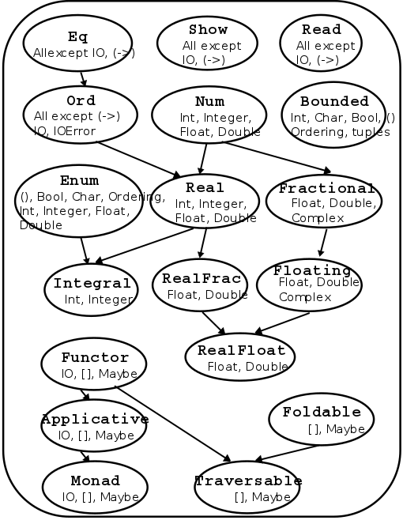
Functions
Guarded equations
-
Haskell has if statements, but they can get very messy very
quickly. You should never use them.
-
Instead, you can use guarded equations, which allow you to
change the behaviour of a function based on a predicate
(condition that returns true or false).
-
For example, let’s take the factorial recursive
algorithm. It can do two things: return 1 when the input is
0 (base case), or multiply the input by factorial(input - 1)
(recursive clause).
-
In Haskell, you can do this in two ways:
|
Pattern matching
|
Guarded equations
|
|
fact 0 = 1
fact n = n * fact (n - 1)
{- Keep in mind that this only works for a .hs
file, it will not work on the GHCi interface
unless you use :{ and :} -}
|
fact n | n == 0 = 1
| n == 1 = 1
| otherwise = n * fact (n - 1)
{- In theory, you should be able to leave out
the n == 1 bit, but GHCi didn't like it when
I tried that. -}
|
-
Let’s take the guarded equation method and pick it
apart to see how this works:
|
Steps
|
Value of n
|
Explanation
|
|
fact n | n == 0 = 1
| n == 1 = 1
| otherwise = n * fact (n -
1)
|
2
|
Here, we start by inputting the value of
‘n’ into the factorial
function.
|
|
fact n | n == 0 = 1
| n == 1 = 1
| otherwise = n * fact (n -
1)
|
2
|
Now, we look at the first guarded equation
predicate. If this is true, we do whatever is on
the right of the equals sign next to it. If this
is false, we move on to the next
predicate.
|
|
fact n | n == 0 = 1
| n == 1 = 1
| otherwise = n * fact (n -
1)
|
2
|
It’s false, so we look at the next
predicate below it. The same rule applies
here.
|
|
fact n | n == 0 = 1
| n == 1 = 1
| otherwise = n * fact (n - 1)
|
2
|
It’s false, so we move on to the next
predicate. The same rule applies here.
‘otherwise’ is like
‘else’ in Java or C, it’s used
when all other predicates are false. It’s
syntactic sugar for “True”.
|
|
fact n | n == 0 = 1
| n == 1 = 1
| otherwise = n * fact (n - 1)
|
2
|
‘otherwise’ is always true, so we
do what’s on the right of the equals sign
here. This is the recursive clause, so we do the
function again, but with n - 1.
|
|
fact n | n == 0 = 1
| n == 1 = 1
| otherwise = n * fact (n -
1)
|
1
|
Here, we input the value of ‘n’
into the factorial function again.
|
|
fact n | n == 0 = 1
| n == 1 = 1
| otherwise = n * fact (n -
1)
|
1
|
We check the first predicate. If it’s
true, we do whatever is on the right. If not,
move on to the next predicate.
|
|
fact n | n == 0 = 1
| n == 1 = 1
| otherwise = n * fact (n -
1)
|
1
|
That was false, so we move on to the next
predicate.
|
|
fact n | n == 0 = 1
| n == 1 = 1
| otherwise = n *
fact (n - 1)
|
1
|
That predicate was true, so we do what’s
on the right of the equals sign next to it. It
just says 1, so we return 1.
|
-
The order of the guards matter (just like if statements in
Java), as the interpreter will go from top to bottom.
-
Using guarded equations, we can put error cases in our
functions, like in this function that solves quadratic
equations:
|
quadroots :: Float -> Float -> Float -> String
quadroots a b c | a == 0 = error "Not quadratic"
| b*b-4*a*c == 0 = "Root is " ++ show (-b/2*a)
| otherwise = "Upper Root is "
++ show ((-b +
sqrt(abs(b*b-4*a*c)))/2*a))
++ "and Lower Root is "
++ show ((-b -
sqrt(abs(b*b-4*a*c)))/2*a))
|
-
This is a little ugly, though... isn’t there some way
we can locally define constants?
‘where’ vs ‘let’ and
‘in’
-
‘where’ allows you to locally define constants within the
scope of your functions.
-
Using the quadratic example above, we can do:
|
quadroots :: Float -> Float -> Float -> String
quadroots a b c | a==0 = error "Not quadratic"
| discriminant==0 = "Root is " ++ show centre
| otherwise = "Upper Root is "
++ show (centre +
offset)
++ " and Lower Root is "
++ show (centre -
offset)
where discriminant = abs(b*b-4*a*c)
centre = -b/2*a
offset = sqrt(discriminant/2*a)
|
-
Now, the local variables ‘discriminant’,
‘centre’ and ‘offset’ are available
within the scope of the function!
-
Doing this helps tidy up code and aid readability.
-
Make sure to indent the left of ‘where’
appropriately, or the Haskell interpreter will
complain.
-
‘let’ and ‘in’ allows you to also define local variables inside a
scope.
- Example:
|
add x y = let z = x + y in
z
|
-
In this example, we have a function ‘add’ that
takes in ‘x’ and ‘y’.
-
In that function, we let ‘z’ equal
‘x’ + ‘y’ within the scope of the
next line.
-
In that next line, we’re not really doing much;
we’re just returning z.
-
We can add more local variables using brackets, just make
sure you use semi-colons:
|
quadadd a b c d =
let { e = a + b; f = c + d } in
e + f
|
-
This has exactly the same effect as this, where we nest
‘in’ clauses:
|
quadadd a b c d =
let e = a + b in
let f = c + d in
e +
f
|
-
The difference between ‘let’ + ‘in’
and ‘where’ is that ‘let’ +
‘in’ is an expression; you can put it anywhere where an expression is expected. On the other hand,
‘where’ is syntactically bound to a function,
meaning you can only use it in one place.
Pattern matching
-
You can define a function in several parts by using pattern
matching.
-
Pattern matching allows you to define what the parameter
should look like, and then act accordingly.
- For example:
|
not :: Bool -> Bool
not False = True
not True = False
|
-
If the parameter is ‘False’, return
‘True’. If the parameter is ‘True’,
return ‘False’.
-
Let’s try a more complex example:
|
nonzero :: Int -> Bool
nonzero 0 = False
nonzero _ = True
|
-
That underscore _ is a wildcard. Any value can go there, within reason. You use this when
you don’t really care what’s there.
-
Again, the order of the pattern matches matter, just like
guards.
|
(&&) :: Bool -> Bool -> Bool
True && b = b
False && _ = False
|
-
If I were to use the function like:
|
True && ((5 * 3 + 1) < (8 * 2 - 6))
|
-
The value of the expression on the right will be localised
within the variable ‘b’ in the code above.
-
With structure patterns, you can apply pattern matching with structures, like
lists or tuples.
-
For example, if you had:
-
This function foo, returns the first element of the input tuple: x.
-
The second element of the input tuple would be ignored, as
there is a wildcard there.
-
Another example:
-
As long as the first and third elements are ‘5’
and ‘4’, the result will be the second
element.
-
This also works with nested tuples and nested lists.
-
With list patterns, you can use the ‘cons’ operator with pattern
matching.
- For example:
-
If you did tail [1,2,3], then the variable ‘x’
would be ‘1’ and ‘xs’ would be
[2,3].
-
Basically, (x:xs) splits the list into its head and its
tail. Sometimes, this makes implementing recursive
algorithms easier. It also validates input to only lists
with at least one element.
-
If (x:xs) = [1,2,3] then x = 1, xs = [2,3]
-
If (x:xs) = [4] then x = 4, xs = [ ]
-
You can go further and add more, like:
|
addFirstTwoFromList (x:y:xs) = x + y
oneElementOnly
(x:[]) = True
|
-
With composite patterns, you can use all of the above together with multiple
arguments.
-
Here is an example of that:
|
fetch :: Int -> [a] -> a
fetch _ [] = error "Empty List"
fetch 0 (x:_) = x
fetch n (_:xs) = fetch
(n-1) xs
|
-
As you can see, pattern matching can be applied to any
parameter, and can be used as extensively as you need,
within reason.
-
String patterns are just normal patterns, but with strings.
-
Remember, they’re just lists of Chars. Therefore,
list patterns can be used with strings.
-
For example, ( _ : ‘a’ : _ ) matches strings
whose second character is ‘a’.
-
The pattern [] matches the empty string.
Lambda expressions
-
Lambda expressions are simple ways of creating quick functions without a
name.
-
For example, you could create an add function and apply it
like:
|
add :: Int -> Int -> Int
add x y = x + y
add 5 6
|
-
But did you know that you could also do:
|
(\x -> \y -> x + y) 5 6
or
(\x y -> x + y) 5 6
|
-
You don’t have to name it at all; you can just create
it quick, use it, and never refer to it again.
-
This is particularly useful when using functions like
‘map’.
Operator sections
-
An operator section is an infix operator in prefix
form:
-
Let’s say you wanted a function that just adds 5 to
stuff.
-
You could write:
|
add5 :: Int -> Int
add5 x = x + 5
|
-
But why write that when you can write:
-
This is because something like “5 + 4” can be
written as “(+) 5 4”.
-
So you can cut that expression in half and get just the
part where it adds 5: “(+5) 4” (because,
remember, everything is curried in Haskell).
-
It works both sides, so (+5) and (5+) are the same.
List Comprehension and Recursion
List comprehension
-
You can generate a list, a bit like set
comprehension.
-
Those two expressions yield the same thing, except one is
set theory and one is Haskell.
-
[x^2 | x <- [1..5]]
-
The blue part is what will be in each element of the list.
-
The red part are the conditions that each element must abide
by.
-
You can even add more variables and conditions:
-
[(x,y) | x<- [1..5], y <- [6..10], x > y]
-
In general, list comprehensions look like this:
-
[exp | cond1, cond2, cond3, ..., condn]
Zips
-
There is a zip function, which lets you zip two lists
together into tuples.
- Example:
|
> zip ['a', 'b',
'c'] [1, 2, 3, 4]
[ ('a', 1), ('b', 2), ('c', 3) ]
|
STICKY FINGAAS!!!
-
This is pretty handy; you could use a list comprehension
over the zipped list.
-
For example, you could pair up elements of a list:
|
pairs :: [a] -> [ (a,a) ]
pairs xs =
zip xs (tail xs)
> pairs [1,2,3,4]
[(1,2),(2,3),(3,4)]
|
-
Then you could use a list comprehension to check if a list
is sorted:
|
sorted :: Ord a => [a] -> Bool
sorted xs = and [ x≤y | (x,y) <-
pairs xs ]
|
Recursion
-
Recursion is simple in Haskell.
-
Just refer to the same function again within the function
body:
|
fac 0 = 1
fac n = n * fac (n-1)
|
-
If you need to recurse through a data structure, like a
list, just do the following:
|
length :: [a] -> Int
length [] = 0
length (x:xs) = 1 + length xs
|
-
By doing this, ‘x’ is the first element of the
list and ‘xs’ is the rest of the list.
-
You can also use wildcards:
|
drop 0 xs = xs
drop _ [] = []
drop n
(_:xs) = drop (n-1) xs
|
-
You can also have mutual recursion, where two recursive
functions recurse each other!
|
evens :: [a] -> [a]
evens [] = []
evens (x:xs)
= x : odds xs
odds :: [a] -> [a]
odds [] = []
odds (x:xs) =
evens xs
|
-
These are the 5 steps to not lose marks in the exam better recursion:
-
Step 1: Define the Type
-
Step 2: Enumerate the Cases
-
Step 3: Define the simple (base) cases
-
Step 4: Define the other (inductive) cases
-
Step 5: Generalise and Simplify
Tail recursion
-
Tail recursion is a special kind of recursion that calls
itself at the end (the tail) of the function in which no
computation is done after the return of recursive
call.
-
In other words, the recursive calls do all the work, and at
the end, the answer is just returned, as opposed to normal
recursion, where a big computation is built up through
recursive calls, then at the end, the whole thing is
computed and returned.
-
Typically, tail recursion uses accumulators, whereas normal
recursion does not.
-
Here are two kinds of factorial function, one with tail
recursion and one without:
|
Tail recursion
|
No tail recursion
|
|
fac' :: Int -> Int -> Int
fac' acc 0 = acc
fac' acc n = fac'
(n*acc) (n-1)
fac' 1 5 -- Start
fac' 5 4
fac' 20 3
fac' 60 2
fac' 120 1
fac' 120 0
120
|
fac :: Int -> Int
fac 1 = 1
fac n = n * fac (n-1)
fac 5 -- Start
5 * fac 4
5 * 4 * fac 3
5 * 4 * 3 * fac 2
5 * 4 * 3 * 2 * fac 1
5 * 4 * 3 * 2 * 1
120
|
-
In the tail recursion version, all of the work is done in
the accumulator as each of the steps go by. Then, once the
base case is reached, the answer is simply spat out.
-
In the non-tail recursion version, no work is done by the
recursive steps; it’s just building up one big sum.
Once the base case is reached, one huge computation is
calculated and returned.
-
That’s the difference; tail recursion does stuff in
steps, whereas normal recursion does it in one huge chunk at
the end!
-
They still do the same thing, except tail recursion uses an
accumulator.
-
Sometimes, the tail recursion way is easier to
understand.
-
Because of the way Haskell works, these two methods work
exactly the same way, even under the hood!
-
That’s because Haskell is lazy, and won’t calculate things unless it really has to.
-
So Haskell won’t calculate the value of the
accumulator until the very end, which is what the non-tail
recursion method does.
Higher Order Functions
-
A higher order function is a function that either takes in
a function or returns a function.
-
The following are higher order functions:
|
func1 :: (a -> b) -> a
func2 :: a -> (b -> a)
|
Map, filter and fold
-
Why do we have higher order functions?
-
One of the reasons why is for the ‘map’
function.
-
The ‘map’ function allows you to apply a
function to all elements of a functor.
-
For example, you could use ‘map’ to add 5 to
all elements of a list:
|
map (\x -> x + 5) [1,2,3]
map (+5) [1,2,3]
-- result is [6,7,8]
|
-
Another example is ‘filter’, which allows you
to filter out things from a list:
|
filter (\x -> x == 5) [1,2,3,4,5]
filter (==5) [1,2,3,4,5]
-- result is [5]
|
-
Another example is ‘fold’. There are two fold
functions: ‘foldl’ and
‘foldr’.
-
‘foldl’ is left-associative, and
‘foldr’ is right-associative.
-
Here is an example that sums a list:
|
foldr (\x acc -> x + acc) 0 [1,2,3]
foldr (+) 0 [1,2,3]
|
-
The first argument is a lambda with an element and an
accumulator, the second argument is the starting value of
the accumulator and the third argument is the list to
fold.
-
‘foldl’ works pretty much the same way as
‘foldr’, except for the different associativity,
but there may be some efficiency gains. However, be wary of
infinite lists with ‘foldl’!
Dollar operator
-
The operator $ takes in a function and an argument and
applies the function to the argument.
-
Why not just run the function?
-
The reason why is $ associates to the right.
-
Here’s an example: let’s say you wanted to run
the following:
-
The answer you want is 5, but instead, you get 19.
Why?
-
Haskell is left-associative, so it does sqrt 3^2 first,
then adds it to 4^2.
-
To make it right, use this:
-
The $ operator associates to the right, so 3^2 + 4^2 will
be calculated first, then it’ll be
square-rooted.
Function composition
-
Another operator is the function composition (dot)
operator.
-
You can use it like maths, to join two functions
together.
-
So instead of
-
That’s basically English!
Declaring Types
Declaring Types and Classes
‘type’
-
You can define type synonyms, so that you can call a data
structure a name that makes more sense.
-
For example, we don’t say a character array (unless
you’re working with C), we say
‘string’.
-
We don’t use [Char], we use String.
-
Here is how you can define your own synonyms:
-
So now, instead of saying (Int, Int), you can say Pos
instead.
-
If you want to parameterise the class you want, you can do
that as well:
-
So now, when you do function type declarations, you can
feed in the class parameters of the synonym
‘Pair’, and those classes will be validated
inside the tuple.
- For example:
|
type Pair a b = (a, b)
f :: (Integral a, Integral b) => Pair a b -> Pair a b
f (x,y) = (x+1, y+1)
|
-
The function ‘f’ will only work if a pair of
integers are inputted, because it takes in “Pair
Integral Integral”.
-
Additionally, nesting types are allowed, but recursing them
is not.
|
type Pos = (Int,Int)
type Translation = Pos -> Pos -- Niiicee!!
type Tree = (Int, [Tree]) -- Ohh noo!!
|
‘data’
-
If you want to define a completely new type, and not just a
synonym, then you can use the ‘data’
keyword.
-
To instantiate a new type, you have to use it’s
constructor.
- Example:
|
data Pair = PairInt Int Int | PairString String String
|
-
To instantiate a new Pair, you need to use either the
constructor PairInt, or PairString, then the values. This
ensures type validation.
-
Here’s what’s allowed and not allowed with our
example:
|
-- RIGHT
PairInt 5 6
PairString "filthy acts" "at a reasonable price"
-- W R O N G
PairInt "killer queen" "bites the dust"
PairString 4 4
|
-
You can have lots of constructors separated by bars |.
-
Like type synonyms, data types can have parameters too,
like:
|
data Maybe a = Nothing | Just a
|
-
You can also do recursive types with
‘data’:
|
data BinaryTree a = Leaf a | Node a (BinaryTree a) (BinaryTree a)
Node 4 (Node 3 (Leaf 1) (Leaf 2)) Leaf 5 -- you could have this, for example
|
-
You can even do pattern matching:
|
getLeftBranch :: BinaryTree a -> BinaryTree a
getLeftBranch (Leaf a) = Leaf a
getLeftBranch (Node a x y) = x
|
‘newtype’
-
This is like a cross between ‘type’ and
‘data’. You can only have one constructor, and
you can only provide one type after a constructor.
- For example:
|
newtype Pair = Pair (Int, Int)
|
-
This means it’s more than just renaming something,
because you still need the constructor, but it’s more
restrictive than ‘data’ because you only have
one constructor and one type.
‘class’
-
You know how each class has their own function that applies
to every type that inherits that class?
- For example:
-
the class Eq has ==
-
the class Ord has < and >
-
the class Num has + and -
-
the class Functor has ‘map’ (more on that later!)
-
Let’s make our own, using the ‘class’
keyword!
- Example:
|
class Tree a where
flatten :: a b -> [b]
|
-
This is our ‘Tree’ class that represents trees.
It has a method ‘flatten’, which flattens all of
the values in the tree nodes.
-
The ‘a’ in ‘Tree a’ represents the
data structure that inherits the ‘Tree’ class,
for example ‘BinaryTree’.
-
The ‘b’ in ‘a b’ represents the
type of the node values in the data type
‘a’.
-
So now, we have our class, like Eq or Ord.
-
But Eq and Ord have their own instances, for example all
numbers inherit the class Eq or Ord. How do we create data
structures that inherit our class Tree?
‘instance’
-
We can use the ‘instance’ keyword to pair our
BinaryTree data type to our Tree class:
|
instance Tree BinaryTree where
flatten (Leaf v) = [v]
flatten (Node v x y) = [v] ++ flatten x ++ flatten
y
|
-
In our instance block, we have to define the functions
we’ve declared in the class block.
-
We need to define it in terms of BinaryTree, because
that’s what we’re making an instance of.
-
So ‘class’ defines what Tree does generally
with data type ‘a’, and ‘instance’
substitutes in ‘BinaryTree’ for ‘a’
and tells Haskell what to do if the program treats
BinaryTree like a Tree.
-
If that doesn’t make any sense, then go ahead and try
creating your own class with data types. You’ll learn
much better by doing, not reading!
Trees
Red-Black Trees
-
Remember red-black trees from Algorithmics?
-
The root is black
-
All the leaves are black
-
If a node is red, it has black children
-
Every path from any node to a leaf contains the same number
of black nodes
-
Here is an example of a balanced red-black tree:
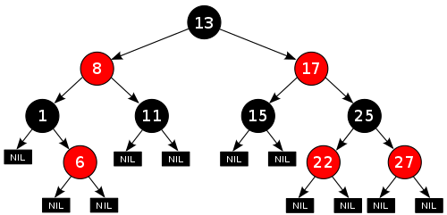
-
How do we do this in Haskell?
- Like this:
|
data RBTree a =
Leaf a
| RedNode a (RBTree a) (RBTree a)
| BlackNode a (RBTree a) (RBTree a)
|
-
We can also define a function called ‘blackH’
which finds the maximum number of black nodes from any
path - from the root to the leaf.
|
blackH (Leaf _ ) = 0
blackH (RedNode _ l r) = maxlr
where maxlr = max (blackH l) (blackH r)
blackH
(BlackNode _ l r) = 1 + maxlr
where maxlr = max (blackH l) (blackH r)
|
Abstract Syntax Trees
-
You can create a tree that represents syntax of an
algebra.
-
For example, you could do arithmetic:
|
data Expr = Val Int | Add Expr Expr | Sub Expr Expr
eval :: Expr -> Int
eval (Val n) = n
eval (Add e1 e2) = eval e1 + eval e2
eval
(Sub e1 e2) = eval e1 - eval e2
-- Example
eval (Add (Val 10) (Val 20)) -- Would return 30
eval (Sub (Val 20) (Val 5)) -- Would return 15
|
-
Even propositional logic:
|
-- Data type for propositional expression
data Prop = Const Bool
| Var Char
| Not Prop
| And Prop Prop
| Imply Prop Prop
-- Data type for a single pair of variable to
value
type Subst = [ (Char, Bool) ]
-- Takes a var, a substitution pair and returns
the value that the var is paired with
find :: Char -> Subst -> Bool
find k t = head [ v | (k',v) <- t,
k == k' ]
-- Evaluates a propositional expression
eval :: Subst -> Prop -> Bool
eval s (Const b) = b
eval s (Var c) = find c s
eval s (Not p) = not $ eval s p
eval s (And p q) = eval s p && eval s q
eval
s (Imply p q) = eval s p <= eval s q
-- Examples
eval [] (And (Const False) (Const True)) -- Would return False
eval [('a', True)] (Var 'a') -- Would return True
|
Functors
-
A functor is simply a class, like Ord or Num, that says
“this can be mapped over”.
-
For example, a list is a type of functor, because you can
use the “map” function on it.
-
The only function in this class is “fmap”.
“map” is the same as “fmap”, except
that it’s exclusively for lists.
-
Here is the class for Functor, as well as some
instances:
|
class Functor f where
fmap :: (a -> b) -> f a -> f b
instance Functor [] where
fmap = map
instance Functor Maybe where
fmap _ Nothing = Nothing
fmap g (Just x) = Just (g x)
|
-
When you create an instance of Functor in some class you
make, make sure it abides by the following laws:
|
fmap (g.h) = fmap g . fmap h
|
-
Here is an illustration of fmap (+3) (Just 2)
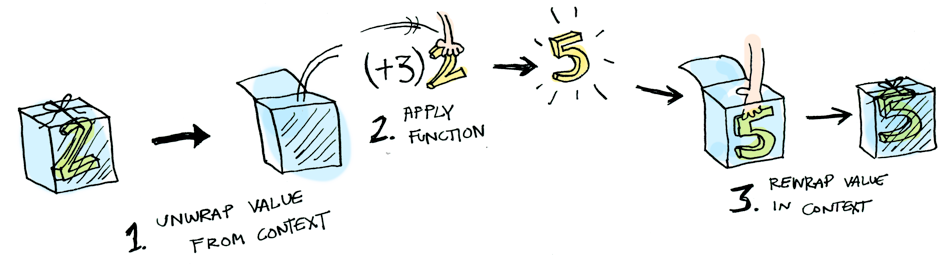
-
If you still don’t understand functors, I strongly
suggest this article about Functors, Applicatives and Monads. It has
really simple explanations and images to explain these
complex ideas!
-
A tree is also a type of data structure. We could create a
map function that works on trees, thereby making trees a
functor!
-
We could have something like:
|
instance Functor BinaryTree where
fmap g (Leaf v) = Leaf (g v)
fmap g (Node v x y) = Node (g v) (fmap g x) (fmap g
y)
|
-
Boom! Now we can use fmap on BinaryTrees if we wanted to,
like:
|
fmap (\x -> x + 10) (Node 5 (Leaf 3) (Leaf 6))
-- this will return: Node 15 (Leaf 13) (Leaf
16))
|
Directions, trails and zippers
-
We can define the direction in which we can traverse
through a tree, like this:
|
data Direction = L | R
type Directions = [ Direction ]
elemAt :: Directions -> Tree a -> a
elemAt _ (Leaf x) = x
elemAt (L:ds) (Node _ l _) = elemAt ds l
elemAt
(R:ds) (Node _ _ r) = elemAt ds r
elemAt
[] (Node x _ _) = x
-- Examples
elemAt [L] (Node 5 (Leaf 3) (Leaf 4)) -- returns 3
elemAt [R, L] (Node 5 (Leaf 6) (Node 2 (Leaf 8) (Leaf 9))) -- returns 8
|
-
How do we know how far we’ve gone?
-
We can build up a trail so we know the direction
we’ve gone in:
|
type Trail = [Direction]
goLeft :: (Tree a, Trail) -> (Tree a, Trail)
goLeft (Node _ l _ , ts) = (l , L:ts)
goRight :: (Tree a, Trail) -> (Tree a, Trail)
goRight (Node _ _ r , ts) = (r , R:ts)
-- Examples
(goLeft . goRight) (a, []) -- for some tree 'a', this will return
(b, [L, R]) where 'b' is the subtree if
you go right, then left in 'a'
|
-
You can also make a function to follow a trail, if you
like.
-
But what if you want to go back up? You don’t
remember the parent when you go left or right.
-
You can make it so that Direction stores the parent as
well:
|
data BinaryTree a = Leaf a | Node a (BinaryTree a) (BinaryTree a) deriving (Show)
data Direction a = L (BinaryTree a) | R (BinaryTree a) deriving (Show)
type Trail a = [ Direction a ]
parentInDirection (L p) = p
parentInDirection (R p) = p
goLeft :: (BinaryTree a, Trail a) -> (BinaryTree a, Trail a)
goLeft (Leaf x, ts)
= (Leaf x, ts)
goLeft ( p@(Node _ l _) , ts) = (l, (L p):ts)
goRight :: (BinaryTree a, Trail a) -> (BinaryTree a, Trail a)
goRight (Leaf x, ts)
= (Leaf x, ts)
goRight ( p@(Node _ _ r) , ts) = (r, (R p):ts)
goUp :: (BinaryTree a, Trail a) -> (BinaryTree a, Trail a)
goUp (tree, ts) = (parent,
restOfList)
where
latestMove = head ts
restOfList = tail ts
parent = parentInDirection
latestMove
-- Example
(goUp . goLeft) (tree, []) -- this will return (tree, []) because goLeft
followed by goUp effectively does nothing, like
taking a step forward then taking a step
back
|
ZIPPER MAN!
-
This concept of pairing one piece of data with another in a
list of pairs has a name in functional programming:
it’s called a zipper type.
Graphs
-
Functional programming is crap for modelling graphs.
-
Usually, if you wanted to work with graphs in a functional
programming paradigm, you’d use a hybrid language,
like JavaScript or F#.
-
In Haskell, we’ll look at three ways to try and model
graphs.
Indexed collections of Nodes, Edges
-
This is a nonstructural approach.
-
This is the easiest and most intuitive way to do
things.
-
Basically, you have a function that takes in a node and
returns a list of adjacent nodes, like so:
-
Actually, the lovely developers over at Haskell HQ has
already done this! In the Data.Graph package, they
have:
|
type Table a = Array Vertex a
type Graph = Table [ Vertex ]
|
-
Where ‘Vertex’ is some ID of the node, like an
Int or something.
-
They also provide functions for working with graphs, like
searching, building, fetching, reversing etc.
-
This is alright, but you can’t weight the edges and
the performance is slow.
Structured data type with cyclic dependencies
-
This has limitations for modifying the graphs.
-
It’s similar to the method from before, except
we’re not using an array; we’re using a cyclic
dependency.
-
What’s a cyclic dependency? Think of it like
this:
-
What is the value of xs = 0 : xs?
-
It’s an infinite string of zeroes: [0,0,0,0,0,0,0,0,0...]
-
Next: what is the value of xs where xs = 0 : ys, ys = 1 : xs?
-
This one’s a bit more tricky, but it’s [0,1,0,1,0,1,0,1...]
-
So you see, we’re defining these lists in a
“cyclic” manner, because they go back and forth,
around and around, like a circle.
-
What if we applied a cyclic dependency to our graph
structure?
-
First of all, to make it simpler, let’s assume that
each node only has one edge.
-
Let’s create a data structure for this:
|
data Graph a = GNode a (Graph a)
|
-
GNode a (Graph a)
-
The value of the node
-
Adjacent node; the node that this node can go to
-
Now, we want a function that converts a table of nodes to a
Graph structure:
|
mkGraph :: [ (a , Int) ] -> Graph a
|
-
Where our input table looks a little something like
this:
|
ID
|
Value
|
Next node
|
|
1
|
London
|
3
|
|
2
|
Berlin
|
4
|
|
3
|
Rome
|
2
|
|
4
|
Morioh
|
1
|
-
The implementation can go a little something like
this:
|
mkGraph :: [ (a, Int) ] -> Graph a
mkGraph table = table' !! 0
where table' =
map (\(x,n) -> GNode x (table'!!n) ) table
|
-
You can generalise this so that a node can have lots of
outgoing edges:
|
data GGraph a = GGNode a [GGraph a]
mkGGraph :: [ (a, [Int]) ] -> GGraph a
mkGGraph table = table' !! 0
where table' =
map (\(x,ns) -> GGNode x (map (table'!!) ns ) table
|
-
With this method, you don’t need to name nodes and
it’s fast to go from node to node. However, you
can’t build this structure incrementally; you have to
build it all at once.
Inductive approach with graph constructors
-
This provides inductive structure and pattern
matching.
-
This is the library Data.Graph.Inductive.Graph.
-
Here, each node has an Int ID, like last time.
-
The graph is built one node at a time, and all the nodes
link together to form a graph, kind of like how you could
use a : b : c to form a list [a,b,c].
-
There are two key things to building a graph using this
approach:
|
empty :: Graph a b
embed :: Context a b -> Graph a b -> Graph a b
|
-
The ‘empty’ value is an empty graph with no
nodes or edges.
-
The ‘embed’ function embeds a new node into an
existing graph and returns the new graph.
-
So, what’s a context?
-
A context is a data structure that represents a node, on
its own, outside a graph.
-
It stores the node ID, the node label, the outgoing edges
and incoming edges.
|
type Adj b = [ (b,Node) ]
type Context a b = (Adj b , Node, a , Adj b)
|
-
type Adj b = [ (b,Node) ]
-
The label of the edge
-
The node on the end of this edge
-
type Context a b = (Adj b, Node, a, Adj b)
-
Incoming edges
-
Node ID of this node
-
Label of this node
-
Outgoing edges
-
An example of a graph with this is:
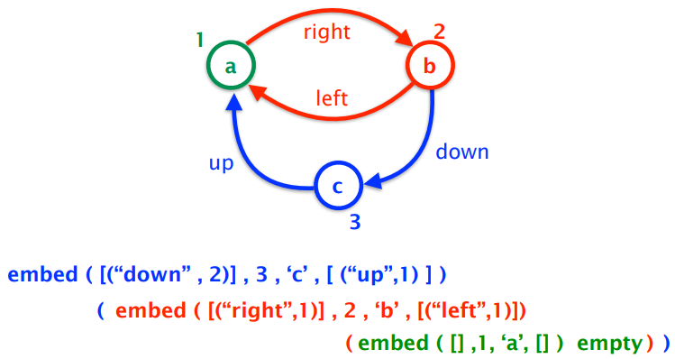
-
Of course, there are other ways to make this graph, which
will all work if implemented.
-
Not only can you build up a graph node by node, you can
decompose a graph node by node as well.
-
FGL provides a function ‘match’:
|
match :: Node -> Graph a b -> Decomp a b
|
-
Which takes in a node to remove, the graph itself, and
returns the graph without the node.
- Decomp is:
|
type Decomp a b = ( Maybe (Context a b), Graph a b )
|
-
the first element of the pair is either the removed node or
nothing.
-
the second element of the pair is the graph without the
node.
-
There’s also a function called matchAny:
|
matchAny :: Graph a b -> Decomp a b
|
-
If you don’t really care which node you take out;
it’ll remove any.
-
With these, you can create a map function for your
graph:
|
gmap :: (Context a b -> Context c b) -> Graph a b -> Graph c b
gmap f g
| isEmpty g = empty
| otherwise = embed (f c) (gmap f
g')
where (c, g') = matchAny g
|
Evaluation Order and Laziness
Equational reasoning
-
Equational reasoning simply means proving things by
following equations through.
-
For example, you could prove not (not False)) is False by simplifying it to not (True), then simplifying it further to False.
-
However, we’re going a little deeper by using proof
by induction.
-
Proof by induction:
-
To prove P(n) for all n, we prove P(0) and we then prove
for any k that P(k+1) holds under the assumption that P(k)
holds.
-
Say we had the natural number data type, like this:
|
data Nat = Zero | Succ Nat
|
-
Where 0 is Zero, 1 is Succ Zero, 2 is Succ Succ Zero
etc.
-
We also have an add function:
|
add :: Nat -> Nat -> Nat
add Zero m = m
add (Succ n) m = Succ (add n m)
|
-
How do we prove that ‘add’ is associative with
proof by induction?
-
We need to prove it for a base case and for an inductive
case.
-
We want to prove: add x (add y z) = add (add x y) z
|
Base Case
|
Inductive Case
|
|
add Zero (add y z) -- START
add (add Zero y) z -- GOAL
add Zero (add y z)
= { defn of add }
add y z
= { defn of add 'backwards'}
add (add Zero y) z
|
add (Succ x) (add y z) -- START
add ( (add (Succ x) y) z ) -- GOAL
add (Succ x) (add y z)
= { defn of add }
Succ (add x (add y z) )
= { inductive hypothesis }
Succ (add (add x y) z)
= { defn of add 'backwards'}
add (Succ (add x y) z )
= { defn of add 'backwards'}
add ( (add (Succ x) y) z )
|
-
You can even perform proofs on structures!
-
To see these proofs, look at the slides.
Redex
-
A redex, or “reducible expression”, is simply a
part of an expression that you need to know before you
compute the full expression.
-
For example, if you were to calculate the expression:
-
There are three redex’s inside this:
-
Because Haskell is fully functional, expressions like
“5 +” is actually a function, so to do, say,
“5 + 6”, Haskell finds the function “5
+”, then uses that function on “6”.
-
Therefore, even in an expression like “5 + 6”,
there is a redex “5 + 6” because Haskell needs to know that function
before computing the rest of the expression.
Beta-reduction
-
Beta reduction is a process that converts a function call
into an expression.
-
You’re familiar with lambda expression, right? You
should be; I covered it a few sections ago.
-
If not, it goes like this: , where the first ‘x’ after the lambda is the
parameter and everything after the dot is the function body.
The syntax can vary, but that’s the gist of it.
-
You can call a lambda function like this: , which is .
-
If you wanted multiple parameters, you would do , which is (it’s similar to how Haskell curries
everything).
-
When we converted to , we’ve done beta reduction.
-
More generally, if we had a function and an input
 , to beta reduce, just take the function body and replace
all
, to beta reduce, just take the function body and replace
all  with .
with .
-
Just like in our example, we took the function body and replaced all with .
-
Here’s a more complex example: how do we
reduce...
-
...using beta reduction?
-
This is a big jump, but if we break this up and do this
step-by-step, it’s not so bad.
-
First of all, let’s isolate the function body:
-
Now let’s split this up into its terms:
-
Our argument is . Which of those terms are ?
-
Just the one, right? So we replace that:
-
Now we work back into the function body...
Call-By-Name
-
Outermost reduction with no reduction under lambda is more
commonly known as call-by-name reduction. This is used by Haskell.
-
In layman’s terms, this means that function calls are
processed without processing or even looking at the
arguments.
-
For example, let’s say we have an infinite list, and
we want to get the first element of that infinite
list:
-
Call-by-name doesn’t care about the infinite list; it
won’t try to process it. Instead, it’ll just
perform the function “take 1” and take 1 element
off of that list. The result will simply be [1].
-
Because of this, Haskell can efficiently process
information by lazy evaluation.
-
Haskell also uses something called graph reduction to perform lazy evaluation.
-
Remember in beta-reduction where an expression is repeated
wherever the function parameter is?
-
With graph reduction, only one instance of the expression
is stored and multiple pointers to that expression are used
instead.
-
Therefore, any reductions performed on the single copy will
permeate throughout all references of that expression.
-
You want an example of graph reduction? Alright: consider
this Haskell line:
-
With call-by-name, we don’t care what that argument
is. We just create a list of 10 unevaluated expressions of . But since they’re all unevaluated, if we tried to
display this list, wouldn’t we have to calculate 10 times for each element?
-
You are wrong! Remember, Haskell uses graph reduction.
There is only one ; every element in that list is a pointer to that one . Therefore, we only need to calculate once, then all the pointers will update.
Call-By-Value
-
Innermost reduction with no reduction under lambda is more
commonly known as call-by-value reduction. This is used by languages like C++, Java, Python etc.
-
In English, this means that arguments are processed before
the function is called.
-
For example, let’s say we have an infinite list, and
we want to get the first element of that infinite
list:
-
Call-by-value will try and process that infinite list, and
it’ll be there forever because there’s no end to
it. Therefore, this function call will not end.
Modularity
-
Let’s just say we want a Haskell program that yields
us a list of 300 1’s. Here’s two different
possible solutions:
|
Solution A (the good one)
|
Solution B (the crap one)
|
|
ones = 1 : ones
take 0 _ = []
take _ [] = []
take n
(x:xs) =
x : take (n-1) xs
take 300 ones
|
replicate 0 _ = []
replicate n x =
x : replicate (n-1) x
replicate 300 1
|
-
Solution A splits the code into data (ones) and control
(take).
-
Solution B blends the two together.
-
Solution A is better because it’s more modulated,
therefore:
-
it’s easier to debug
-
parts of it are reusable
-
easier to read and understand
-
you split the problem up into subproblems, making it easier
to program
-
The point is, Haskell allows modularity through
laziness.
-
You can use this for other examples too, like creating a
list of all prime numbers using the Sieve of Eratosthenes
(data), then taking the first 100 primes (control).
Strict application
-
If you wanted to, you could scrap all of this and use
strict application.
-
Basically, it tells Haskell to evaluate the expression on
the right before applying the function. It’s used with
the ‘$!’ operator.
-
It’s mainly used for space efficiency, and it allows
for true tail recursion.
- Example:
|
Step
|
Code
|
|
1
|
square $! (1 + 2)
|
|
2
|
square $! (3)
|
|
3
|
square 3
|
|
4
|
9
|
Interpreters and Closures
Part 1 - Substitutions
-
We’re going to write an interpreter in Haskell!
-
What language should we interpret?
-
How about lambda calculus? The rules are pretty simple
there.
Lambda calculus
-
What is lambda calculus?
-
It’s a formal system to express functions.
-
There are only three rules: variables on their own,
function application and function abstraction.
-
Here they are:
|
Rule
|
Description
|
Format
|
Example
|
|
Variable
|
It’s just a variable on it’s
own.
|
Just some symbol on it’s own
x
|
x
y
|
|
Function abstraction
|
A function definition
|
A lambda character, followed by a variable
name, followed by a full stop, followed by the
function body which is another lambda
expression
λ(some variable).(some lambda
expression)
They can be curried to have more
parameters
λ(some
variable).λ(anothervariable).λ(yet
another variable) … .(some lambda
expression)
Instead of dots, you can use an arrow, if you
wish
|
λx.x
λx.λy.y
λx.λx.x
λx.λy.λz.y
OR
λx→x
λx→λy→y
λx→λx→x
λx→λy→λz→y
|
|
Function application
|
A function being applied to some
expression
|
It’s just an expression separated by an
expression with a space
(a lambda expression) (another lambda
expression)
It represents calling a function with some
input
|
λx.x x
λx.λy.y y
x y
λx.λy.y
λy.λy.y
|
-
Despite how simple it is, it can encode a lot of
information.
-
It can encode arithmetic, logic, structured data etc.
-
A variable x is bound in the term λx → e and the scope of the binding is the expression e.
-
A variable y is free in the term λx → y because it was initialised outside of the scope of
this function abstraction.
-
A lambda expression with no free variables is called closed.
Beta reduction syntax
-
Remember beta reduction a few sections ago?
-
If not, scroll up and read it. It’s literally right
above this section.
-
We’re going to express beta reduction like
this:
-
(λx → e1) e2
-
will be rewritten as
-
e1 [ x := e2 ]
-
Read it like “In e1, replace all x with e2”.
Alpha conversion
-
(λx → (λy → x)) y
-
which is basically
-
(λy → x) [ x := y ]
-
which becomes
-
(λy → y)
-
Everything seems fine and dandy.
-
But what if we have this:
-
λy → ((λx → (λy → x))
y)
-
it will become
-
λy → (λy → y)
-
Ah... that’s not exactly what we wanted. That y is
now bound by the inner function, not the outer function like
it’s supposed to.
-
If only we could rename the parameter of the inner
function...
-
What? That’s already a thing?
-
Alpha conversion renames an inner function so that you
don’t get variable capture, which is a phenomenon that occurs in substitution when a
free variable becomes bound by the term you substitute it
into.
-
So if we rename the inner y to z, we can have:
-
λy → ((λx → (λz → x))
y)
-
it will become
-
λy → (λz → y)
-
Everything is fixed thanks to alpha-conversion!
-
With all of these rules, you can now build your
interpreter!
-
If you really want to know how, look at these slides.
Part 2 - Machines
-
Plot twist! Part 1 is a load of crap and you
shouldn’t implement interpreters that way.
-
Well, you can, but it’s really inefficient.
Environments
-
We have this lambda expression:
-
(λx -> x) e
-
With normal beta reduction, this becomes just
- e
-
But what if we were lazy and just said
-
x (but we know that e is substituted as x)
-
We’re not explicitly replacing anything, we’re
just storing a record of the substitutions.
-
Therefore, we could look up stuff when we need it.
-
This is the concept of an environment.
-
An environment records bindings of variables to
expressions, just like a mapping.
-
For example, if we had the expression
-
(λx -> e1) e2
-
... and we wanted to use beta reduction with environments,
we could go about this like:
|
|
Expression
|
Environment
|
|
Before beta reduction
|
(λx -> e1) e2
|
Nothing
|
|
After beta reduction
|
e1
|
x is mapped to e2
|
-
How do we write this in proper syntax?
-
We’ll write
-
e | E
-
to represent an expression e in the environment E.
-
So now, our beta reduction looks like:
-
(λx -> e1) e2 | E ⟼ e1 | E [ x := e2 ]
-
Where E [x := e2] means environment E updated with the new binding of x to the expression e2.
-
Note that e1 may now contain free occurrences of x.
-
That means we should have a rule like:
-
x | E ⟼ “lookup x in E” | E
-
... so that we can look up free occurrences of x when we get to them.
Frames
-
Another improvement to our interpreter is to make it so
that it only focuses on the subterm that needs evaluating
next.
-
Keep in mind that everything that follows is tailored to a call-by-value strategy.
-
Have a think about what we actually do when we look at an
expression:
|
Expression
|
What do we do?
|
|
x
|
It’s just a variable. We can’t
simplify this down any further, so just leave
it. It’s terminated.
|
|
λx -> e
|
This is just a lambda term on it’s own.
We can’t simplify this any further, so
leave it. It’s terminated.
|
|
(λx -> e1) e2
|
This is an application, which can be reduced.
First of all, we reduce e2, then we perform beta
reduction.
|
|
e1 e2
|
We can simplify this, also. If we’re
doing left-most, we simplify e1 then e2, and if
we’re doing right-most, we simplify e2 and
then e1.
We will be doing left-most for now.
|
-
So there’s two possibilities of simplifying things
down: either we have a lambda application, or a normal
application with two expressions.
-
When we simplify the lambda application, we take out the e2
and leave the rest, leaving just
-
(λx -> e1) [-]
-
Where [-] is a hole or an empty void where we took out e2 and
can plug in other expressions.
-
Once we’ve simplified e2, we plug it back in and we
perform beta reduction.
-
When we simplify the application, we take out e1, leaving
just
-
[-] e2
-
Once we’ve simplified e1, we plug it back in and take
out e2, leaving:
-
e1 [-]
-
Once we’ve simplified e2, we plug that back in and we
can continue.
-
All of these expressions with [-] in them are called frames.
-
They’re sort of like a “snapshot” of what
we haven’t evaluated yet as we venture deeper into the
lambda expression.
-
Think of it like a Java call stack, how
‘frames’ are stacked when you call lots of
methods.
-
A stack of frames is called a continuation.
-
Just for reference’s sake, a value is a terminated expression; one that cannot simplify
anymore.
Continuations
-
Now that we have continuations, let’s rewrite our
reductions as follows:
-
e | E | K ⟼ e’ | E’ | K’
-
Where K is our continuation.
-
When do we push a new frame onto the stack?
-
We push when we have an unevaluated expression that we want
to simplify.
-
e1 e2 | E | K ⟼ e1 | E | ([-] e2) :: K
-
When do we pop a new frame off the stack?
-
If our focussed expression is terminated (which will be
represented with a V), there’s three
possibilities:
-
K is empty
-
We’re finished; the evaluation has terminated
-
We now need to take out e2 and put back e1 (now called V
because we should have simplified it), by popping the e2
frame and pushing a new frame with V on it:
-
V | E | [-] e2 :: K ⟼ e2 | E | V [-] :: K
-
K has (λx -> e1) [-] at the top
-
We need to perform beta reduction:
-
V | E | (λ x -> e) [-] :: K ⟼ e | E [x := V] | K
CEK-machines
-
Let’s combine these three ideas into one set of
rules.
-
This is called a CEK-Machine, and it stands for:
-
Control
-
Environment
-
Kontinuation
-
Each of these make up the syntax we’ve been using all
this time:
-
Here’s the rules, in all their glory:
|
#
|
C
|
E
|
K
|
C
|
E
|
K
|
|
1
|
x
|
E
|
K
|
“lookup x in E”
|
E
|
K
|
|
2
|
e1 e2
|
E
|
K
|
e1
|
E
|
[-] e2 :: K
|
|
3
|
V
|
E
|
[-] e :: K
|
e
|
E
|
V [-] :: K
|
|
4
|
V
|
E
|
(λx -> e) [-] :: K
|
e
|
E [x := V]
|
k
|
R1: x | E | K
⟼ “lookup x in E” | E
| K
R2: e1 e2 | E | K
⟼ e1 | E
| [-] e2 :: K
R3: V | E | [-] e :: K ⟼ e | E
| V [-] :: K
R4: V | E | (λx -> e) [-] :: K ⟼ e | E [x := V]
| K
|
Rule #
|
Explanation
|
|
1
|
If we see a single variable on it’s own,
look it up in the environment and replace it
with that corresponding expression.
|
|
2
|
If we see an application, take out the left
expression for simplifying and put the right
expression onto the stack.
|
|
3
|
If we have a fully simplified expression and
there’s an application on the stack that
has a left-side missing, put the left side back
and take out the right-side for
simplifying.
|
|
4
|
If we have a fully simplified expression and
there’s a lambda application on the stack
that has a right-side missing, perform beta
reduction on our terminated value and that
function application.
|
-
But not too much glory! There’s a problem.
Closures
-
What’s the problem?
-
Have a look at this expression:
-
(λz -> λx -> (λy -> y z x y)
(λx -> z x)) e1 e2
-
This looks daunting at first, but let me split this up for
you:
-
(λz -> λx -> (λy -> y z x) (λx -> z x)) e1 e2
-
Remember that z is e1 and x is e2.
-
Now, I want you to focus on this part here:
-
λy -> y z x
-
The y here is bound to the yellow function above, so:
-
(λx -> z x) z x
-
Now z is being substituted into this function as x, so now
x is being rebound to the value of z, which is e1.
-
But that means our interpreter will change the x on the
right of the expression into e1, when it should be e2.
-
When a function is used as a value, we need to keep track of the bindings of its free variables
at the point of use.
-
We need to think of a function as a closed entity.
-
How do we do this?
-
We use closures!
-
A closure is a pairing of a function to the bindings in the current
environment.
-
The syntax is: cl(λx -> e, E)
-
We pass these around instead of values.
-
Think of a closure like local scoped variables in a method
in Java.
-
Here’s the new grammar we’re using:
-
W ::= cl(λx -> e, E)
-
F ::= W [-] | [-] e E
-
K ::= [] | F :: K
-
E ::= ∅ | E [x := W]
-
W represents a closure or a terminated value.
- F is a frame
-
K is a continuation
-
E is an environment
-
Here’s the rules, but rewritten with closures:
|
#
|
C
|
E
|
K
|
C
|
E
|
K
|
|
1
|
x
|
E1
|
K
|
λx -> e
|
E2
|
K
|
|
2
|
e1 e2
|
E
|
K
|
e1
|
E
|
[-] e2 E :: K
|
|
3
|
λx -> e
|
E
|
K
|
cl(λx -> e, E)
|
E
|
K
|
|
4
|
W
|
E1
|
[-] e E2 :: K
|
e
|
E2
|
W [-] :: K
|
|
5
|
W
|
E1
|
cl(λx -> e, E2) [-] :: K
|
e
|
E2 [x := W]
|
K
|
R1: x | E1 | K ⟼ λx -> e | E2 | K where lookup x in E1 is cl(λx -> e, E2)
R2: e1 e2 | E | K ⟼ e1 | E | [-] e2 E :: K
R3: λx -> e | E | K ⟼ cl(λx -> e, E) | E | K
R4: W | E1 | [-] e E2 :: K ⟼ e | E2 | W [-] :: K
R5: W | E1 | cl(λx -> e, E2) [-] ::
K ⟼ e | E2 [x := W] | K
|
Rule #
|
Explanation
|
|
1
|
A simple variable look-up, this time with
closures. I’m not sure why the slides made
it so complicated; it’s just a look-up as
far as I can see.
|
|
2
|
If there is an application, pluck out the
left-side and put the rest on the continuation
stack along with a copy of the current
environment.
|
|
3
|
If there is a function, wrap it in a closure
along with a copy of the current
environment.
|
|
4
|
If we have a terminated value and a right-side
only application is on top of the stack, then
take the right-side to simplify and put the
left-side (our terminated value) back into the
stack.
|
|
5
|
If we have a terminated value and a closure on
the stack, then pop the closure off the stack,
perform beta reduction with the closure function
and the terminated value and add the new pairing
to the environment.
|
Example sequence
-
In case you forgot, this is supposed to interpret lambda
expressions.
-
Let’s watch this evaluate the term:
-
(λx → λy → x) e1 e2
-
Given that e1 and e2 are terminated values:
|
Step #
|
Rule # used
|
C
|
E
|
K
|
Explanation
|
|
1
|
N/A
|
(λx → λy → x) e1
e2
|
∅
|
[]
|
Nothing has been done yet; this is like our
“initial state”.
|
|
2
|
R2
|
(λx → λy → x) e1
|
∅
|
([-] e2 ∅) ::
[]
|
We have an application, so R2 is applied.
The left side of the application is plucked and
stored in control, and a new frame is created
and pushed, which stores the other side along
with a copy of the environment at the time of
creation.
|
|
3
|
R2
|
(λx → λy → x)
|
∅
|
([-] e1 ∅) ::
([-] e2 ∅) ::
[]
|
There is another application, so R2 is used
again.
Like with the previous step, the left-hand side
is stored and the right-hand side is pushed as a
frame, with a copy of the environment with
it.
|
|
4
|
R3
|
cl(λx → λy → x,
∅)
|
∅
|
([-] e1 ∅) ::
([-] e2 ∅) ::
[]
|
A raw function is found! We apply R3.
We create and store a closure of this function
with the current environment.
|
|
5
|
R4
|
e1
|
∅
|
cl(λx → λy → x,
∅) [-] ::
([-] e2 ∅) ::
[]
|
We have a closure, and an application is on the
stack. We use R4.
This is just like the rule before closures, but
this time it’s with closures; we put the
left expression back and we now take out the
right expression.
|
|
6
|
R5
|
λy → x
|
[x := e1]
|
([-] e2 ∅) ::
[]
|
We have a terminated value and a closure on the
stack, so we use R5.
We take out the environment in the frame and
use that (which was nothing to begin with), then
we add a new pairing: the parameter of the function in the
closure to the expression in the control section. The expression in the function of the closure
goes into our control section.
|
|
7
|
R3
|
cl(λy → x,
[x := e1])
|
[x := e1]
|
([-] e2 ∅) ::
[]
|
We’ve found another raw function, so yet
again, we put a closure around it and add a copy
of the current environment to it.
|
|
8
|
R4
|
e2
|
∅
|
cl(λy → x,
[x := e1]) [-] ::
[]
|
We’ve got a closure and another
application on the stack, so we use R4.
Simply, we put the left-side expression back
and take out the right-side expression to
simplify.
|
|
9
|
R5
|
x
|
[x := e1,
y := e2]
|
[]
|
We have a terminating value and a closure on
the stack, so we use R5.
Again, the environment in the closure is used
and we add an extra pairing of the closure
function’s parameter to the expression in
the control section.
The body of the closure function is now in the
new control section.
|
|
10
|
R1
|
e1
|
[x := e1,
y := e2]
|
[]
|
We have a single value we need to convert, so
we use R1, which looks up the value of x and
replaces it with what it finds.
|
|
DONE
|
-
We’re finished; the expression simplifies down to
just e1!
Functional I/O and Monads
I/O in Haskell
IO a
-
Pure function: a function whose output solely depends on the input.
Nothing else affects the output.
-
This is not true with Java methods, because the state of
the object also affects the output. This is called a side-effect.
-
A function with a side-effect in Haskell is a little hacky.
Basically, we input a state along with the input, and we get
a state out along with the output:
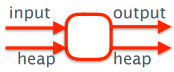
-
Let’s just say we had a type World that represents
the system state.
-
We could define a transformation:
-
type IO = World -> World
-
We need an output too, so we should instead put:
-
type IO a = World -> (a, World)
-
Our function also needs to take arguments, so we can
do:
-
Char -> IO a
-
Which would be the same as:
-
Char -> World -> (a, World)
-
So, what can you do with the World? Stop time?
-
No. It actually doesn’t exist.
- But IO does.
-
So when you have a function like Char -> IO Int, this actually means this:
-
... and the Int you get out is determined by the Char input
and the system state.
-
The difference between Int and IO Int is that:
-
Int is just a regular type that can store an integer
-
IO Int is a function that takes in a system state and
returns an integer value and the modified system state
Actions
-
IO Char
-
IO Float
-
IO ()
-
IO a
-
An action is an expression of type IO a.
-
There are three basic actions:
-
getChar :: IO Char (read a single character from stdin)
-
putChar :: Char -> IO () (takes a char and returns an action that writes that char
to the standard output)
-
return :: a -> IO a (casts a pure expression into an expression with IO)
-
When we see an action of type IO (), it doesn’t return anything; its only purpose is to
change the state in some way.
Do notation
-
How do we sequence actions, for example how do we call
getChar 3 times in a row to read a string of length 3?
-
We can use do notation!
-
‘do’ notation looks like this:
|
do p1 <- act1
p2 <- act2
.
.
.
pn <- actn
actfinal
|
-
The actions are listed from act1 to actn, and any result is
pattern matched and bound to p1 to pn.
-
The final action actfinal must not be bound and is
typically a ‘return’ action.
-
Each action must be column aligned.
-
If an action doesn’t return anything, then you
don’t need the “p <-” bit.
-
The type of the overall expression is the type of the final
action.
-
This is an example of an action that reads three
characters, and returns the first and third
characters:
|
firstThird :: IO (Char,Char)
firstThird = do x <- getChar
getChar
y <- getChar
return (x,y)
|
-
This is an example of an action that writes a string to
standard output:
|
putStr :: String → IO ()
putStr [] = return ()
putStr
(x:xs) = do putChar x
putStr xs
|
-
This is an example of an action that writes a string to the
standard output with a new line:
|
putStrLn :: String → IO ()
putStrLn xs = do putStr xs
putChar '\n'
|
-
This is an example of an action reading a line from
standard input:
|
getLine :: IO String
getLine = do x <- getChar
if x == '\n' then
return []
else
do
xs <- getLine
return (x:xs)
|
-
The one above might take a bit of explaining:
-
The ‘if, then, else’ section is all one
expression with type IO String and is thus an action.
-
The reason why we do a second ‘do’ at the end
is because ‘else’ only expects one action after
itself, and by using ‘do’ we encapsulate those
two lines into one action.
Main Function, File Handling, Random Numbers
-
Did you know there’s a main function in
Haskell?
-
It’s of the type IO ()
-
Haskell also provides basic actions for reading and writing
files:
|
type FilePath = String
readFile :: FilePath -> IO String
writeFile :: FilePath -> String -> IO ()
appendFile :: FilePath -> String -> IO ()
|
-
As you would expect, reading files are done lazily.
-
The System.IO module introduces the IO type and the Handle
type, so you can choose whether you want to read/write from
stdin, stdout, stderr or a file.
-
You can also have random actions, from the System.Random
module.
-
You can get a random number with:
-
randomIO : IO a
-
You can get a random number in a range with:
-
randomRIO :: (a, a) -> IO a
Applicatives
-
A quick refresher on functors: they’re classes that
can be mapped over with fmap. Lists, Justs, Trees,
they’re all functors.
-
Applicative is a class, like Functor. In fact, it’s
the next step up from functors.
-
With applicatives, the function is now wrapped in a
context!
-
The class looks like this:
|
class Functor f => Applicative f where
pure :: a -> f a
(<*>) :: f (a -> b) -> f a
-> f b
|
-
The pure function takes any pure value and adds a context to it.
Nothing is changed.
- For example:
-
pure x =
[x] (for lists)
-
pure x = Leaf x (for trees)
-
pure x = Just x (for maybes)
-
pure x = return x (for IO)
-
The <*> operator unpacks the function from the
context and the argument, applies the function to the
argument, and then packs the result back into a context and
returns it.
-
So applicatives are just functors, but the function is in a
context as well.
-
Here’s an illustration of Just (+3) <*> Just 2
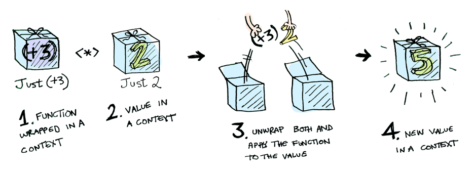
-
With this, we can create maps that handles multiple
inputs!
- For example:
|
pure (\x y -> x + y) <*> [1, 2, 3] <*> [10, 20, 30]
|
-
So, what does this actually simplify to?
-
You know that Haskell is left-associative, so the order
goes like this:
-
pure (\x y -> x + y) <*> [1, 2, 3] <*> [10, 20, 30]
-
Where red is first and blue is second.
-
pure takes the input and adds a context to it, so it
becomes
-
[\x y -> x + y] <*> [1, 2, 3] <*> [10, 20, 30]
-
Next, the red expression is simplified by unpacking the
function and the argument and applying them.
-
However, notice that the function requires two parameters,
but we’re only giving it one in this red expression.
What happens when you give a function too little parameters?
It returns a partially applied function!
-
So for each number (1, 2 and 3), that lambda on the left
will not return a number; it’ll return a partially
applied function for each, so the result will be:
-
[(\y -> 1 + y), (\y -> 2 + y), (\y -> 3 +
y)]
-
Making our total expression:
-
[(\y -> 1 + y), (\y -> 2 + y), (\y -> 3 + y)]
<*> [10, 20, 30]
-
Now we just have to simplify the blue bit. We’re
comfortable with one function being wrapped in a list, but
what about multiple?
-
What the list applicative does in this case is it unpacks
all the functions, and it applies the first with all the
argument values, the second with all the argument values
etc. then it unions all those results into one big
list.
-
So the result of this would be:
-
[11, 21, 31, 12, 22, 32, 13, 23, 33]
-
Which is our final answer.
-
Did you know that IO is also an applicative?
-
pure in terms of IO is the same as return.
-
<*> in terms of IO is the following:
|
(<*>) :: IO (a -> b) -> IO a -> IO b
mg <*> mx = do g <- mg
x <- mx
return (g x)
|
-
In English, <*> takes two actions as input:
-
An action that returns a function from a to b
-
An action that returns a value a
-
The operator unpacks the function and the value by
performing the actions in a ‘do’ block. It then
runs the function on the value and returns it out of the
‘do’ block.
-
Because return is the same as pure, return (g x) will return an action, or an IO b expression, because return and pure packs pure values into contexts (in this case, IO).
-
How is this useful?
-
We can use this to make a function
-
getChars :: Int -> IO String
-
... that reads the given number of Chars from stdin.
|
getChars :: Int -> IO String
getChars 0 = return ""
getChars n = pure (:) <*> getChar
<*> getChars (n - 1)
|
-
We use : to stick all the characters together into a string,
and we wrap it into an IO using pure (:).
-
Sure, we could also do
|
getChars :: Int -> String
getChars 0 = ""
getChars n = getChar : getChars(n - 1)
|
-
But that doesn’t give us an action. We can use the
one that uses applicatives in a ‘do’ block, like
this:
|
do
str <- getChars 5
return str
|
-
If you can’t be bothered to write pure for the first argument all the time, use <$>:
-
pure a <*> f b
-
is the same as
-
a <$> f b
-
Lastly, like with functors, there are applicative laws that
you need to uphold when implementing them:
-
Law 1: Identity
|
pure (g x) = pure g <*> pure x
|
|
x <*> pure y = pure (\g -> g y)
<*> x
|
|
x <*> (y <*> z) = (pure (.)
<*> x <*> y) <*> z
|
-
If you still don’t understand applicatives, I
strongly suggest this article.
-
Why are functors a superclass of applicatives?
-
If a class C is an applicative, then that means it has an
implementation for the functions pure and <*>.
-
fmap can be defined using only pure and <*>:
-
Therefore class C can be a functor.
Monads
-
Monads take it a step even further:
|
class Applicative m => Monad m where
return :: a -> m a
(>>=) :: m a -> (a -> m b)
-> m b
return = pure
|
-
So what does this actually mean?
-
Don’t worry too much about return; that’s just the same as pure.
-
The real defining feature of monads is the >>= operator (called ‘bind’).
-
The >>= operator takes a wrapped value and a function that
returns a wrapped value, and applies the wrapped value to
the function and returns another wrapped value.
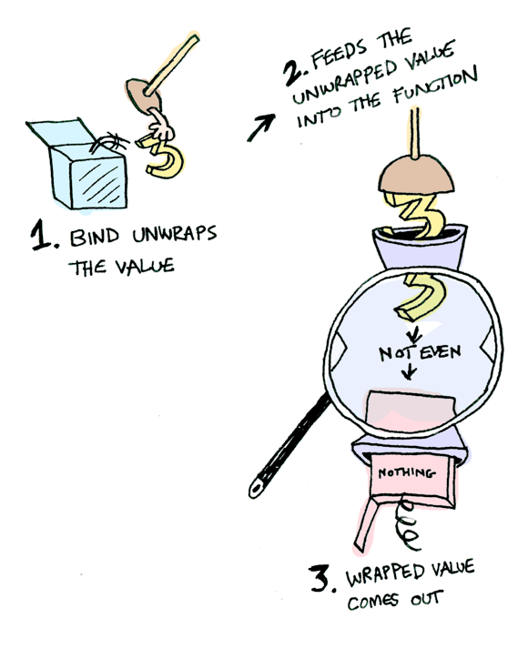
-
Don’t forget, like with functors and applicatives,
there are monad laws too.
-
Law 1: Composition / Left Identity
-
Law 2: Identity / Right Identity
|
(mx >>= f) >>= g = mx >>= (\x
-> (f x >>= g))
|
-
Why are applicatives a superclass of monads?
-
If a class C is a monad, then that means it has an
implementation for the functions return and >>=.
-
pure and <*> can be defined using only return and >>=:
-
pure
= return
-
f <*> x = f >>= \g ->
-
Therefore class C can be an applicative.
-
That sounds so pointless; how could we ever use
monads?
-
Monads are mainly used to abstract away boilerplate code,
so that we can turn a complicated sequence into a succinct
pipeline.
-
When you ask a computer to calculate the next three
possible moves, would you write code along the lines of
“Find the positions in the next move, but don’t go off
the board or walk into any other pieces! Then, go through
each of those new positions and find the next move of all of
those, also making sure you don’t go off the board or
walk into any other pieces! Then, go through each of those new positions and find the next move, and also make
sure you don’t go off the board or walk into any other
pieces etc.”
-
Look how long and tedious that is when all you needed was
“Find the positions in the next three moves”. That’s the sort of thing that monads
solve.
-
Remember, monads are just a design pattern. There’s
nothing new; it’s just a different, more clean way of
doing things.
-
Here’s examples of uses of monads: error handling, chaining and non-determinism.
Use of monads: Error handling
|
data Expr = Val Int | Div Expr Expr
|
-
How do we evaluate it? Like this?
|
eval :: Expr -> Int
eval (Val n) = n
eval (Div x y) = eval x `div` eval y
|
-
What if we divide by 0? It’ll stop working.
-
How do we handle the case where we divide by 0?
-
We could return Maybe Int instead of Int, so we could return Nothing if we divide by 0.
-
Did you know that Maybe is a monad?
-
Maybes handle monads like this:
|
Just x >>= f
|
Nothing >>= f
|
|
Just (f x)
|
Nothing
|
-
So if nothing is passed in, nothing comes out, but if a
Just is passed in, the function applies normally and another
Just comes out.
-
Rewriting this with monads, we can do:
|
eval :: Expr -> Maybe Int
eval (Val n) = Just n
eval (Div x y) = eval x >>= \n ->
eval y >>= \m ->
safediv n m
safediv :: Int -> Int -> Maybe Int
safediv _ 0 = Nothing
safediv n m = Just (n `div` m)
|
-
So what’s actually going on here?
-
safediv is pretty easy; we’re dividing the numbers in a Just
if the second number is not zero. If the second number is
zero, we return nothing.
-
eval uses lambdas as functions, and uses safediv at the end to return another wrapped value.
-
This is good because if any ‘layer’ of those
lambdas returns Nothing, then everything after it will be Nothing as well. This error handling is woven into monads, so we
can abstract away that stuff out of our eval function.
-
We can actually rewrite eval to make it easier to read:
|
eval :: Expr -> Maybe Int
eval (Val n) = Just n
eval (Div x y) = do
n <- eval x
m <- eval y
safediv n m
|
-
Look familiar? This is the same ‘do’ notation
that we used for IO.
-
This is because ‘do’ notation is actually
syntactic sugar for that lambda stuff we did above.
-
If we used ‘do’ notation for IO, does that mean
IO is a monad?
-
Yes. IO is a monad.
Use of monads: Chaining
-
You can also chain functions together with monads, like
this:
|
Just 10 >>= (\x -> Just (x + 10)) >>= (\x -> Just (x * 2))
|
-
Let’s go over this bit-by-bit.
-
Remember, Haskell is left-associative so the expression is
parsed like this:
-
Just 10 >>= (\x -> Just (x + 10)) >>= (\x -> Just (x * 2))
-
Where red is parsed first and blue is parsed second.
-
The bind unwraps the first argument, Just 10 to 10, and passes it through the given function, \x -> Just (x + 10). This results in:
-
Just 20
-
So now our expression is:
-
Just 20 >>= (\x -> Just (x * 2))
-
Again, we unpack Just 20 to 20. Then we pass it into the
function, leaving us with:
- 40
-
This is our final answer! The functions x + 10 and x * 2 are chained together with bind, so the operation here
is practically just 2(x + 10).
Use of monads: Non-determinism
-
What about lists? They’re monads too, you know.
-
How do lists handle bind? They do it like this:
|
xs >>= f = [ y | x <- xs, y <- f x
]
|
-
English, please:
-
This means the function is performed on each element of the
list, and all of those results are collected or
“unioned” into one big list.
-
For example, the expression:
-
[3, 4, 5] >>= \x -> [x, -x]
-
This is great because it allows us to do non-deterministic
computations with very little code!
-
If you read the slides (or turned up to the lectures),
you’ll remember the Knight’s Tour example.
-
Basically, we have a knight on a chessboard and we want to
know the possible places it can move.
-
If you’ve never played chess before (play it,
it’s hype) a knight can move one space left, up, down
or right, then another two spaces in a perpendicular
direction. For example, a knight could move one space up,
then two spaces right.
-
Here, we’ll model it in Haskell:
|
type KnightPos = (Int,Int)
moveKnight :: KnightPos -> [ KnightPos ]
moveKnight (c,r) = filter onBoard
[ (c+2,r-1), (c+2,r+1), (c-2,r-1), (c-2,r+1),
(c+1,r-2), (c+1,r+2), (c-1,r-2), (c-1,r+2) ]
where onBoard (c,r) = c `elem` [1..8] && r `elem` [1..8]
|
-
In this code, the moveKnight method takes in a position and
returns the possible positions of the next move.
That’s great, but what if we want to know the possible
positions of the next 3 moves?
- Monads!
|
in3moves :: KnightPos -> [ KnightPos ]
in3moves start = return start >>=
moveKnight >>= moveKnight >>=
moveKnight
|
-
Let’s go over this...
-
Haskell is left-associative:
-
return start >>= moveKnight >>= moveKnight >>= moveKnight
-
The return function is just like pure; it wraps start into a list, the monad we’re working
with.
-
[start] >>= moveKnight >>= moveKnight >>= moveKnight
-
The expression [start] >>= moveKnight will unpack [start] to get just start, then it will put it into moveKnight and that function will return a list of all the possible
positions to move to from start within one turn.
-
[all possible moves in one turn]
-
This makes our expression:
-
[all possible moves in one turn] >>= moveKnight >>= moveKnight
-
Remember how lists work with monads? The bind operator runs
the function on all of the elements of the list, then
collects them all together into one big list.
-
So now, in the blue expression, moveKnight is being called on all elements of the [all possible moves in one turn] list. That means all the results we’ll get will
be all the possible moves in two turns!
-
[all possible moves in two turns]
-
So our expression will become:
-
[all possible moves in two turns] >>=
moveKnight
-
Like before, moveKnight is being called on all elements of [all possible moves in two turns], so all the results will be the possible moves in three
turns.
-
[all possible moves in three turns]
-
Now we’re done! As you can see, if we can make a move
in one turn, we can chain these together with bind and see
where we’ll be in three turns by using list monads.
Since lists can process things in a non-deterministic
fashion, we can calculate different possible
“paths”.
-
If you wanted to, you could see how many moves you could
make in n turns just by repeating the bind call n times.
-
Remember, if you ever get confused about functors,
applicatives and monads, just remember this picture:
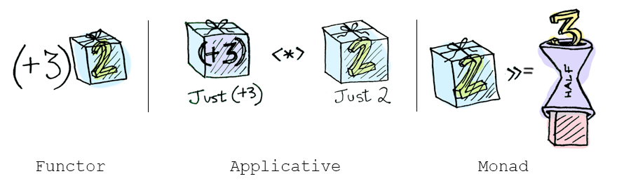
-
We’re not done with monads just yet. Sorry!
-
There’s two more functions: mapM and filterM.
mapM
-
The mapM function goes like this:
|
mapM :: Monad m => (a -> m b) -> [a] -> m
[b]
mapM f [] = return []
mapM f (x:xs) = do y <- f x
ys <- mapM f
xs
return (y:ys)
|
-
So what does this mean?
-
You pass in a function that takes pure values and outputs
wrapped values:
-
... and you also pass in a list of pure values:
-
[ x1, x2, x3, x4, ..., xn ]
-
mapM will then do the following:
|
do
y1 <- f x1
y2 <- f x2
y3 <- f x3
.
.
.
yn <- f xn
return (y1 : y2 : y3 : ... : yn :
[])
|
-
Basically, mapM is like normal map but with the benefit of
monads (error handling, non-determinism etc.)
-
So, for example, if we did:
-
mapM (\x -> [x,-x]) [1,2,3]
-
[[1,2,3],[1,2,-3],[1,-2,3],[1,-2,-3],[-1,2,3],[-1,2,-3],[-1,-2,3],[-1,-2,-3]]
-
Because that map is pretty much doing the same as:
|
do
x1 <- (\x -> [x,-x]) 1
x2 <- (\x -> [x,-x]) 2
x3 <- (\x -> [x,-x]) 3
return (x1 : x2 : x3 : [])
|
-
Still don’t get what this is saying? Don’t
worry; let’s go through this.
-
I’ll use a table and steps to illustrate this
properly:
|
Step #
|
Code
|
Values
|
Explanation
|
|
1
|
do
x1 <- (\x -> [x,-x]) 1
x2 <- (\x -> [x,-x]) 2
x3 <- (\x -> [x,-x]) 3
return (x1 : x2 : x3 : [])
|
x1 = N/A
x2 = N/A
x3 = N/A
|
We’ve just entered the ‘do’
block.
In the ‘Code’ column, the red highlighted bit shows the lines where the computation
has already processed.
|
|
1
|
do
x1 <- [1, -1]
x2 <- [2, -2]
x3 <- [3, -3]
return (x1 : x2 : x3 : [])
|
x1 = N/A
x2 = N/A
x3 = N/A
|
Just to make things a bit easier for us,
let’s simplify those lambda calls on the
right. It’s easy to see what they return,
and it’ll just complicate things if we
leave them. It doesn’t change
anything.
Normally, GHCI will lazily evaluate them, but
just for the example’s sake, we’ve
simplified those now.
|
|
2
|
do
x1 <- [1, -1]
x2 <- [2, -2]
x3 <- [3, -3]
return (x1 : x2 : x3 : [])
|
x1 = 1
x2 = N/A
x3 = N/A
|
Now, we’re looking at the first
line.
Remember how list monads work? The bind
operator runs the function on all the values
within the list, so the function will run twice
here: one with 1 as the input and one with -1 as
the input.
But where’s the “function”
here? We’re in a do block. Remember, do is
syntactic sugar. If you look at this expressed
with bind operators, you’ll see that our
“function” is just the rest of the
do block, the bits that aren’t highlighted
in red.
So now, x1 is 1.
|
|
3
|
do
x1 <- [1, -1]
x2 <- [2, -2]
x3 <- [3, -3]
return (x1 : x2 : x3 : [])
|
x1 = 1
x2 = 2
x3 = N/A
|
Again, the same thing applies and the
“function” here will be run twice:
one with 2 and one with -2.
|
|
4
|
do
x1 <- [1, -1]
x2 <- [2, -2]
x3 <- [3, -3]
return (x1 : x2 : x3 : [])
|
x1 = 1
x2 = 2
x3 = 3
|
Yet again, the function will be called twice
and x3 will be 3 and will soon be -3.
|
|
5
|
do
x1 <- [1, -1]
x2 <- [2, -2]
x3 <- [3, -3]
return (x1 : x2 : x3 : [])
|
x1 = 1
x2 = 2
x3 = 3
[1, 2, 3]
|
Now we’re at the return. Because we’re using the list monad, return will bunch these values all into a list,
so it’ll return [1, 2, 3].
|
|
6
|
do
x1 <- [1, -1]
x2 <- [2, -2]
x3 <- [3, -3]
return (x1 : x2 : x3 : [])
|
x1 = 1
x2 = 2
x3 = -3
|
We’ve reached return; it’s all
over, right? Hold it! Remember how the functions
are repeated for each value in the list? Now,
the computation falls back to x3. The function is called again and x3 becomes -3.
|
|
7
|
do
x1 <- [1, -1]
x2 <- [2, -2]
x3 <- [3, -3]
return (x1 : x2 : x3 : [])
|
x1 = 1
x2 = 2
x3 = -3
[1, 2, -3]
|
We now get [1, 2, -3] since x3 has a new value.
|
|
8
|
do
x1 <- [1, -1]
x2 <- [2, -2]
x3 <- [3, -3]
return (x1 : x2 : x3 : [])
|
x1 = 1
x2 = -2
x3 = N/A
|
x3 is done for this branch, but now we go
further back and x2 becomes -2.
|
|
9
|
do
x1 <- [1, -1]
x2 <- [2, -2]
x3 <- [3, -3]
return (x1 : x2 : x3 : [])
|
x1 = 1
x2 = -2
x3 = 3
|
Now we’re going back into the x3 bit and x3 is going to become 3 and -3, except this time, x2 is -2.
|
|
10
|
do
x1 <- [1, -1]
x2 <- [2, -2]
x3 <- [3, -3]
return (x1 : x2 : x3 : [])
|
x1 = 1
x2 = -2
x3 = 3
[1, -2, 3]
|
We’ve reached return again, and now
we’ve got [1, -2, 3].
Hopefully, you get the picture; all the
combinations will be reached. I’m going to
stop now, because this could go on for a
while.
|
fitlerM
-
The filterM function goes like this:
|
filterM :: Monad m => (a -> m Bool) -> [a] -> m [a]
filterM p [] =
return []
filterM p (x:xs) = do b <- p x
ys <- filterM p
xs
return (if b then x:ys else ys)
|
-
What does this mean?
-
You pass in a function that takes pure values and outputs
wrapped booleans:
-
... and you also pass in a list of pure values:
-
[ x1, x2, x3, x4, ..., xn ]
-
filterM will then do the following:
|
do
y1 <- p x1
y2 <- p x2
y3 <- p x3
.
.
.
yn <- p xn
return [ x1 if y1 is true
(note: not actual Haskell!)
x2 if
y2 is true
x3 if
y3 is true
.
.
.
xn if
yn is true ]
|
-
Basically, filterM is just like filter, except with the
benefits of monads (error handling, non-determinism
etc.)
-
It’s similar to mapM, except instead of mapping to
another value, it uses a predicate and decides whether or
not to include a value in a list depending on that
predicate.
-
With it, you can make a function that gives you the
powerset of a list:
|
powerlist = filterM (\x -> [True, False])
|
-
So, for example, if you did powerlist [1,2,3] you would get:
-
[[1,2,3],[1,2],[1,3],[1],[2,3],[2],[3],[]]
-
Don’t get it? Don’t worry; it’s very
similar to the previous example with mapM.
-
Remember the mapM example and how it went through every
combination of 1, 2 and 3 being positive and negative?
-
Well, instead of positive and negative, think of this filterM example of being inside the list and not inside the list.
-
Here’s a table drawing parallels with the mapM
example:
|
Output elements
|
filterM
|
mapM
|
|
[1,2,3]
|
1 is inside
2 is inside
3 is inside
|
1 is positive
2 is positive
3 is positive
|
|
[1,2] or [1,2,-3]
|
1 is inside
2 is inside
3 is not inside
|
1 is positive
2 is positive
3 is negative
|
|
[1,3] or [1,-2,3]
|
1 is inside
2 is not inside
3 is inside
|
1 is positive
2 is negative
3 is positive
|
|
[1] or [1,-2,-3]
|
1 is inside
2 is not inside
3 is not inside
|
1 is positive
2 is negative
3 is negative
|
|
[2,3] or [-1,2,3]
|
1 is not inside
2 is inside
3 is inside
|
1 is negative
2 is positive
3 is positive
|
|
[2] or [-1,2,-3]
|
1 is not inside
2 is inside
3 is not inside
|
1 is negative
2 is positive
3 is negative
|
-
Do you see the parallels with the mapM example?
-
If you understand mapM, then understanding filterM
isn’t that hard.
Functional Programming in Java
-
Ok, we have made it through Haskell, now we are going to
talk about functional programming in Java
-
In an object-oriented programming language like Java we use
objects to carry some related data. In addition, we provide
methods to manipulate the data of the object.
-
Imagine an object that does not have any fields, i.e. that
does not have any data in it. It will only consist of
methods. These type of objects begin to look something like
functions.
-
Let’s think about the following questions for these
objects:
-
Can they be considered as functions in Java?
-
Can we do functional programming with them?
-
Should we do functional programming with them?
-
What language support should we provide?
Functions as Objects
-
I mentioned that we can have an object without any
fields/data and imagine this object as a function
-
A function has no state, i.e. no fields to manipulate. This
is exactly the case for this object.
-
Let’s think about what one can do with a
function
-
Function application
-
That’s it, there is nothing more we can do with a
function
-
Ok, so we want an object as a function, and only provide
some way to apply this function.
-
In other words, every object will contain exactly one
method and nothing else.
-
Why can’t an object contain multiple methods?
-
Remember that we want to represent a function with an
object
-
It wouldn’t make sense if the object had multiple
methods inside: Which one would be executed when the
function is applied?
-
Let’s look at an example of a function object in
Java
-
We want to code the following function: It should take a
number (Integer) and return the double of that number
|
class Double {
int apply(int x) {
return 2*x;
}
}
|
-
What would the function look like in Haskell?
|
double :: Num a => a -> a
double x = 2*x
|
-
What are the differences between these two
definitions?
-
In Java, the class name is the name of the function. The
function is just called “apply”.
-
In Haskell, you don’t see “apply”
anywhere because that is the default operation for a
function
-
As I mentioned before, you can’t do anything else
with a function other than applying it
-
In Java, we specify with return what the output of the
function is.
-
In Haskell, we just use “=” to specify the
output and we don’t use “return”
-
“return” does exist in Haskell but it has a
completely different meaning
Functional Interfaces
-
Now we have seen the basic structure of how we can
represent a function in Java
-
What can we do in OOP languages to represent such
structures in an abstract way?
-
Exactly, we can define an interface.
-
Remember that an interface is like a contract: All classes
that implement that interface have to implement the methods
specified in the interface
-
Whenever we see an object that implements that interface,
we know that this object adheres to that contract and offers
all the methods specified in the interface
-
So let’s define an interface that specifies exactly
how our function objects should look like, i.e. what methods
they should contain.
-
What method should our function object contain?
-
It should contain exactly one method called apply that
takes an argument of some type and returns something of some
type.
-
Should we fix those types in the interface?
-
Hell no! Then we would need one interface for all possible
input/return type combinations you can think of.
-
What can we do to make it flexible such that we don’t
have to specify a specific type?
-
Exactly, we will use Generics. Our function will take some
generic type and return some other generic type. They can be
any type, we won’t put any restrictions on them.
-
So here is our interface that defines a functional
object:
|
@FunctionalInterface
interface Function<T, R> {
R apply(T x);
}
|
-
We will call this a functional interface
-
Why? Because it is an interface that contains exactly one
method.
-
We will take this one step further: we will call all
interfaces that contain exactly one method a functional
interface.
-
WTF is that “@FunctionalInterface” annotation
m8?
-
Don’t worry about that, that is just for good
practice. Basically, it’s just saying “Hey
everyone this is an interface that contains only a single
method, thus it is a functional interface” for the
information of anyone looking at the code.
-
It is not necessary to add this annotation and it
won’t change anything at runtime.
ActionListener
-
What are some other examples for functional
interfaces?
-
Actually, you have already worked with loads of them.
-
Most famous examples are:
-
Runnable: contains the single method
“run”
-
Comparator: contains the single method
“compareTo”
-
ActionListener, ChangeListener, any other Listener with a
single method
-
Remember that Programming II coursework where you worked
with ActionListener?
-
I’ll take this as an example. We will add an
ActionListener to a button to execute some code when the
button is clicked:
|
JButton testButton = new JButton("Test Button");
testButton.addActionListener(new ActionListener(){
@Override
public void actionPerformed(ActionEvent ae){
System.out.println("Click Detected by Anon Class");
}
});
|
-
This is an example of an anonymous inner class
-
It is very bulky syntactically
-
Let’s think about which part of the syntax we can
actually save/erase without changing the meaning of the
code.
-
Why do we specify which method we implement?
-
ActionListener contains only one single method
actionPerformed, so we cannot implement anything other than
this single method
-
Why do we even specify that we implement an
ActionListener?
-
The method addActionListener expects an ActionListener, so
we have no choice other than providing an implementation of
ActionListener
-
Let’s re-imagine the listener and write this code in
a much neater syntax using a lambda expression
-
We know which interface and which method we need to
implement, so we are not going to write that down
again
-
Strictly speaking, we just need to provide the name of the
argument and the actual code for the function:
|
JButton testButton = new JButton("Test Button");
testButton.addActionListener(
ae -> System.out.println("Click Detected by Anon Class")
);
|
-
Take a moment and compare this code with what we had
before
-
It is much more elegant to write it in this way because it
is straight to the point and doesn’t include any
repetitive syntax
Lambda Syntax
-
For any functional interface we can now use lambda notation
in Java
-
A lambda expression implements the functional interface for
which it is used by providing code for its single
method
-
This is what we have just seen before with the
ActionListener example
-
The syntax is (Args) -> Body where Args is an argument
list and Body is any expression, statement or block
-
The argument list is either a single variable name or a
comma-separated list of variable names
-
You don’t even need to specify the types of the
arguments
-
You don’t need parentheses if you only have a single
argument
-
You can have an empty list () for when there are no
arguments
-
In the body you can omit writing “return” to
return a value from an expression
-
Obviously the argument list and the return type of the body
must match whatever is specified in the functional
interface
-
Let’s look at some more examples
|
// single argument, no parentheses, omitting
"return"
s -> s.length()
// no arguments, parentheses needed, omitting
"return"
() -> 42
// two arguments, explicit types, parentheses
needed, omitting "return"
(int x, int y) -> x+y
// three arguments, implicit types, block
body
(x, y, z) -> {
if (x > y) return z;
else return -z;
}
|
More general function types
-
We have already seen how to implement a function object in
Java
-
However, can we also write a higher-order function like
map?
-
Of course, because our Map function can take an object of
type Function<T,R> as an argument
-
Let’s define a map function for a List:
|
interface MapList<T,U> {
List<U> apply(Function<T,U> fun, List<T>
list);
}
|
-
In the package java.util.function we have common general
purpose functional interfaces, all with generic types:
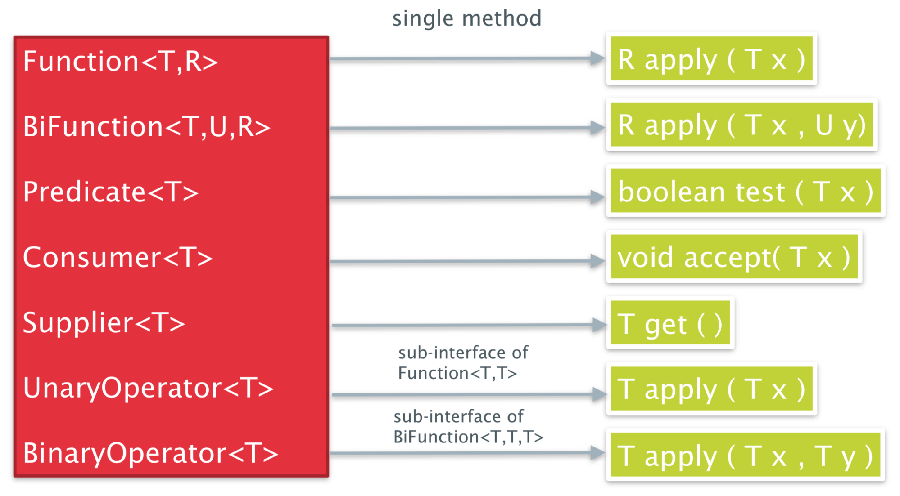
-
Let’s implement MapList and look at practical
examples:
|
public class MyMapList<T, U> implements MapList<T, U> {
@Override
public List<U> apply(Function<T, U> fun, List<T> list)
{
List<U> out = new ArrayList<>();
for (T element : list) {
out.add(fun.apply(element));
}
return out;
}
}
|
-
Let’s use this map function:
|
MyMapList<Integer, Integer> mapper = new MyMapList<>();
List<Integer>
list = …; // [1, 3, 6, 2, 5, 4]
Function<Integer, Integer> fun1 = x
-> x*2;
List<Integer> newList1 =
mapper.apply(fun1, list);
// newList1 = [2, 6, 12, 4, 10, 8]
List<Integer> newList2 =
mapper.apply(x -> x+1, list);
// newList2 = [2, 4, 7, 3, 6, 5]
|
-
As you can see, we use lambda notation to define what the
function is
-
We can either define a new local variable which represents
our function or we can define it directly as a
parameter
Closure: lambda vs anonymous inner classes (AICs)
-
Do you remember the notation of closure in the lambda
calculus?
-
A closure is a pair of a lambda term and bindings for all
of its free variables
-
Even though the slides currently say something else, there
is not much difference between AICs (anonymous inner
classes) and lambda when it comes to closure.
-
One difference is the binding of the “this”
keyword
-
In AICs it refers to the anonymous class
-
In lambda expressions it refers to the enclosing
class
-
Another difference is that the AIC introduces a new scope
whereas the lambda expression does not
-
Let’s look at how closure works for both lambda and
AICs
-
When we access a variable inside the lambda/AIC from the
outside, it will simply get copied inside the
lambda/AIC
-
We are actually working on a copy and not on the original
variable anymore
-
It’s a design decision some engineers have made when
they defined AICs/lambdas for Java
-
Because this copy-process happens, it was decided to only
allow it for final or effectively final variables such that
you don’t really notice that you are working on a
copy
-
In other words, you can only access final or effectively
final variables inside the AIC/lambda
-
Now, this sounds quite easy, but you have to be a bit more
careful
-
When you access a member variable from the enclosing class
inside the lambda/AIC it turns out that it doesn’t
need to be final. Why is that the case?
-
Remember that when you access a member variable you
actually access the variable via the “this”
reference of the enclosing class
-
E.g. you can just write “x” to access member
“x” but you can also write “this.x”
to make it more explicit
-
Whenever you see that you are accessing a member, just
imagine that the “this” keyword is always in
front of it.
-
As it turns out, the “this” keyword is
effectively final. It never changes its reference within its
scope.
-
Therefore, the way to actually view this case is that we
are accessing some variable through the effectively final
“this” reference of the enclosing class
-
The variable itself doesn’t need to be final, it can
be mutable.
-
The same applies to accessing a member variable which lives
inside another object
-
Only the reference to the object has to be final but the
member variable itself can change
-
In order to illustrate this let’s look at two
examples
|
void fn() {
int myVar = 42;
Supplier<Integer> lambdaFun
= () -> myVar; // does not compile because myVar is not
effectively final
myVar++;
System.out.println(lambdaFun.get());
}
|
-
In this example, myVar will be copied inside the lambda
expression
-
As mentioned before, we only allow this for final or
effectively final variables
-
However, myVar is incremented after its declaration and is
therefore not considered effectively final
-
The code will not compile
-
How can we get something like this working? Well, with a
little workaround:
|
private static class MyClosure {
public int value;
public MyClosure(int initValue) { this.value = initValue; }
}
void fn2() {
MyClosure myClosure = new MyClosure(42);
Supplier<Integer> lambdaFun
= () -> myClosure.value; // compiles because the reference is
effectively final
myClosure.value++;
System.out.println(lambdaFun.get()); // prints 43
}
|
-
In this example, the reference of myClosure will be copied
inside the lambda expression
-
This time we don’t have a problem with that because
it is effectively final, i.e. after its declaration it
doesn’t change.
-
We are then accessing “value” which is in the
myClosure object. The contents of the object can change and
do not need to be final.
-
As a result, the code compiles and when we run it, it will
print 43.
Method references
-
Method references provide a means of referencing a given
method as if it were a function in Java
-
Let’s look at an example straight away:
|
List<Integer> list = ...; // [-5, 4, -3, -2, 1]
List<Integer> newList3 =
mapper.apply(x -> Math.abs(x), list);
// newList3 = [5, 4, 3, 2, 1]
|
-
Inside the lambda expression, we are just calling another
function with the parameter
-
That’s it, nothing more happens
-
Now, can we make this code more simple?
-
Can we somehow just pass the Math.abs function to the
mapper? If yes, this would be similar to how we can pass
functions around in Haskell!
-
Well, there is some syntactic sugar in Java for this called
method references:
|
List<Integer> list = ...; // [-5, 4, -3, -2, 1]
List<Integer> newList3 =
mapper.apply(Math::abs, list);
// newList3 = [5, 4, 3, 2, 1]
|
-
The operator :: in Java is an instruction to build a lambda
expression for the given method
-
So :: constructs a lambda expression with an appropriate
number arguments for that method
-
E.g. in our example Math::abs constructs x -> Math.abs(x)
-
The constructed lambda expression can then be used like any
other lambda expression
-
This is a well known operation in the lambda-calculus
called η-conversion (eta-conversion)
-
It says that, for any function
 , is equal to itself
, is equal to itself
-
This seems lovely and straightforward, however, we have to
consider some special cases
-
Here is an overview of the syntax and what it
constructs:
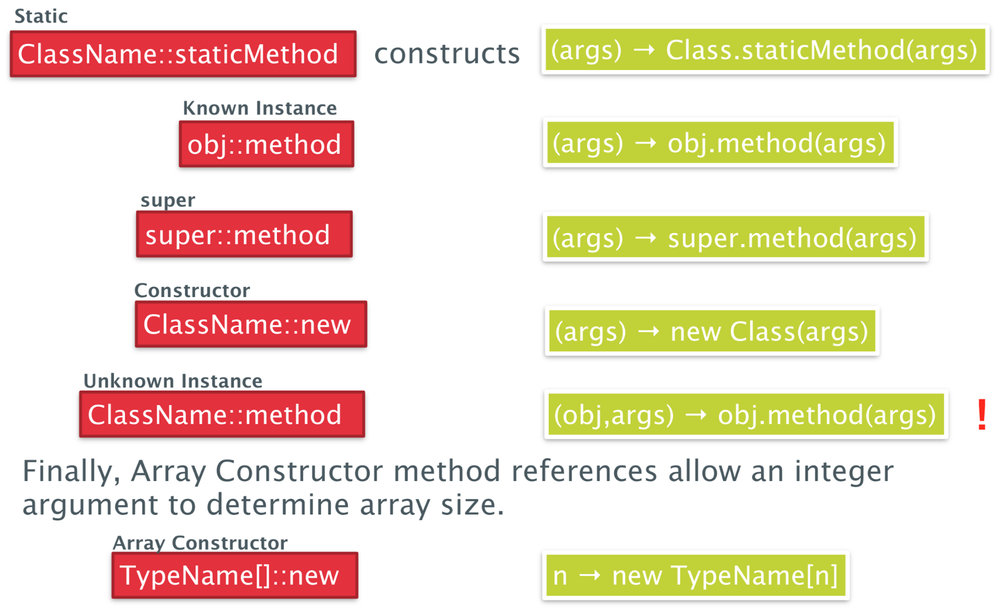
-
In all cases except of Unknown Instance, it constructs a
lambda expression with one argument
-
For unknown instance, the resulting lambda expression also
expects the object reference as an argument
-
Let’s look at an example for unknown instance
-
We will define a higher-order function that takes a
function and a list of people, then applies that function to
each person and prints the output of the function to the
console:
|
private static <T> void listAll(Function<Person, T> f,
List<Person> ps) {
for (Person p : ps) {
System.out.println(f.apply(p));
}
}
|
-
This is how we could call this function using an unknown
instance method reference:
|
List<Person> people = List.of( ... ); // a list of some people
listAll(Person::getName, people);
listAll(Person::getHeight,
people);
|
Recursion
-
Finally we will take a brief look at recursion
-
Anticlimax warning: they aren’t very good
-
Unfortunately we cannot reference a variable in its own
initialiser, like in this example:
|
class FactNonExample {
static Function<Integer,Integer> f = i
-> (i==0)? 1 : i *
f.apply(i-1);
int fact(int n) {
return f.apply(n);
}
}
|
-
In order to make this work, we need to wrap the function
inside another function which we will call Recursive:
|
public class FactExample {
private class Recursive<I> {
I f;
}
private Recursive<Function<Integer,Integer>>
rec =
new Recursive<>();
public FactExample() {
rec.f = i ->
(i==0)? 1 : i * rec.f.apply(i-1);
}
int fact(int n) {
return rec.f.apply(n);
}
}
|
Programming with Streams
Functional programming and lists
-
We have list and arrays in Java but these are not like the
lists in Haskell
-
In Haskell, lists are structural and immutable
-
Furthermore, the way we are used to traverse lists is not
quite functional in style
-
It’s a process that is far too imperative - the
traversals are done manually by the client by explicitly
navigating the list
External vs internal iteration
-
When we talk about iteration, there are two different
approaches: external and internal iteration
-
Let’s first look at an example of external
iteration:
|
Iterator it = shapes.getIterator()
while (it.hasNext()){
Shape s = it.next();
s.setColor(Color.RED)
}
|
-
This is an example of external iteration because you as a
programmer control how the iteration happens
-
It is your responsibility that you select the next element,
check whether there are any more elements left and so
on
-
The enhanced for loop is just syntactic sugar for
this
-
Now look at an example of internal iteration:
|
shapes.forEach(s ->
s.setColor(Color.RED));
|
-
This time we do not control how the interaction
happens
-
Instead we just pass a function which is executed on every
element of the collection
-
In other words, you as a programmer just declaratively
define what should happen with every element of the
collection
-
The iteration itself happens in the background
Streams in Java
-
As it turns out we have something in Java which is quite
similar to the immutable lists in Haskell
-
These structures are called streams
-
They support a number of useful stream operations which can
be concatenated in a functional style
-
There are two types of stream operations
-
Intermediate stream operations
-
They are implemented as lazy operations, meaning that the
stream values are calculated as they are required
-
They return another stream
-
They can be composed with other operations
-
Terminal stream operations
-
They are implemented as eager operations, meaning that all
of the stream values are calculated
-
They consume the input stream and produce a side-effect or
a return value
-
Ok this sounds good, but I still don’t really get
what a stream is.
-
No problem, let’s look at a graphical example:
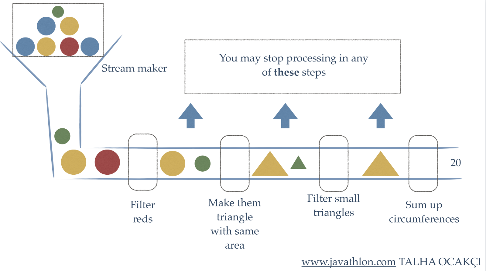
-
The stream in this graphic is the pipeline
-
As an input we get a big box of circles. They have
different colours and sizes
-
We need to pour them into the pipe, and by doing that we
produce a serial stream of circles
-
The first intermediate stream operation is “filter
reds”
-
It will take the input stream
-
It will analyse every circle and throw away all red
circles
-
It will produce an output stream that contains all the
remaining balls
-
The next intermediate stream operation is “make them
triangle with same area”
-
It will inspect the area of each circle and produce a
triangle with the same area and colour
-
The next intermediate stream operation is “filter
small triangles”
-
It will filter out all triangles that are smaller than some
defined area
-
Now we have a terminal stream operation “sum up
circumferences”
-
It will take the input stream
-
For every element (triangle) it receives, it will calculate
the circumference
-
It will sum up the circumferences and keep doing this until
no further element (triangle) is received
-
It will not produce an output stream, it will produce a
number
-
Now that we have seen a graphic example, let’s switch
back to Java
-
How can we produce a stream from an array or from a
collection?
|
String[] array = ...
Set<String>
hash = ...
Stream<String> arrstr =
Arrays.stream(array);
Stream<String>
hashstr = hash.stream();
|
-
So Stream is a generic class, where you denote the type of
the contents with the generic parameter
-
We can also produce a Stream like this:
|
Stream<Integer> stream = Stream.of(1, 2, 3, 4);
|
-
Next we will look at stream operations in Java
Common operations
Map - Streams as Functors
-
First we will look at the stream operation map, which has
the following signature
|
interface Stream<T> {
<R> Stream<R> map(Function<T, R> mapper);
…
}
|
-
It takes a function and applies the function to every
element in the stream to produce a new transformed
stream
-
The function takes an unstructured value and produces
another unstructured value
-
It’s a lazy, intermediary operation
-
Here is an example
|
Stream.of(1, 2, 3, 4)
.map(num -> num * num)
.forEach(System.out::println); // 1 4 9 16
|
-
So what’s going on here?
-
We are producing a stream containing the numbers 1, 2, 3
and 4
-
Then we are applying a function to each of the elements,
where we multiply the element with itself. This will produce
a new stream with modified elements.
-
Then we are iterating over each of the elements and
printing them to the console using a method reference.
-
This operation essentially makes the Stream a
functor!
-
Why? Because a functor takes a structured value and an
unstructured function and produces a new structured
value
flatMap - Streams as Monads
-
Now we will look at the operation flatMap, which has the
following signature
|
interface Stream<T> {
<R> Stream<R> flatMap(Function<T, Stream<R>> mapper);
}
|
-
It takes a function and applies the function to every
element to produce the new transformed stream.
-
However, this time the function does not produce an
unstructured value but produces a new stream with just that
value, i.e. produces a structured value
-
However, as you can see flatMap returns a Stream and not a
Stream with Streams inside.
-
Therefore, flatMap flattens all the streams the function
produces and returns one single flat Stream.
-
Does this remind you of something?
-
Well this is exactly what the bind operation of a monad
does, so Stream is also a monad!
-
In fact, Stream.of(...) is equivalent to “pure”
in Haskell because it converts an unstructured value into a
structured value (into a Stream)
-
Here is the same example as above, but this time with
flatMap:
|
Stream.of(1, 2, 3, 4)
.flatMap(num -> Stream.of(num *
num))
.forEach(System.out::println); // 1 4 9 16
|
More stream operations yay
-
We have seen map and flatMap, but there a whole load more
stream operations, for example:
|
Intermediate Operations
|
filter
|
Takes a predicate and returns a stream with
elements that satisfy the predicate.
Haskell Equivalent : filter
|
|
peek
|
Takes a consumer and returns a stream with the
same elements but also feeds each element to the
consumer.
|
|
distinct
|
Returns a stream with duplicate elements
removed (it uses .equals for checking
equivalency).
Haskell Equivalent : nub
|
|
sorted
|
Returns the stream sorted to their natural
order (only for Streams of Comparable elements
possible).
Haskell Equivalent : sort
|
|
iterate
|
Takes a unary operator and a start element and
produces an infinite stream by repeatedly
applying the function.
Haskell Equivalent : iterate
|
|
Terminal Operations
|
forEach
|
Takes a consumer and feeds each element in the
stream to it. Unlike peek it does not produce an
output stream.
|
|
toArray
|
Simply converts the stream to an array and
closes the stream.
|
|
reduce
|
Similar to a fold in Haskell. Takes a base
element, and a binary operator and applies it
element wise across the stream by accumulating
the result. Note that no guarantee of order is
given.
|
|
max, min, count
|
Examples of specific reduce operations
Haskell Equivalent : maximum, minimum,
length
|
|
collect
|
Converts the stream to a collection according
to a specified Collector and closes the stream.
|
-
Let’s look at a typical example of using
Streams:
|
List<String> jobs = ps.stream() // Stream<Person>
.map(x ->
x.getJobs()) // Stream<Set<String>>
.flatMap(x ->
x.stream()) // Stream<String>
.distinct() // Stream<String>
.collect(Collectors.toList()); // List<String>
|
-
Suppose that we have an array of people and wish to list
all the different jobs people have, but without repeating
any jobs
-
Suppose also that we have a method getJobs() in Person
which returns a Set of jobs of this person
-
Then we can get that list of jobs exactly like shown
above.
State of Streams
-
I have some bad news: We can only use every Stream
once
-
Once we have operated on a Stream object it remembers that
and will not allow any further operations
-
Thus Streams do have state: Either they are fresh or they
already have been operated on.
-
If you try to operate on a Stream twice, like in the
following example, then a IllegalStateException will be
thrown
|
Stream<Integer> str = Stream.of(10, 2, 33, 45);
Stream<Integer> strF =
str.filter(x -> x < 30 );
Stream<Integer> strM =
str.map(x -> x + 5 ); // Exception thrown here
|
Optional
-
A method of note in Stream is findFirst
-
It returns the first element of the stream but
interestingly the return type is Optional<T>
-
An Optional<T> is a wrapper for an object of type T.
It can either hold an actual value of T or it can hold
nothing (i.e. be empty)
-
You can check via the method isPresent() if the Optional
holds something
-
In addition, other interesting methods are
-
Optional<R> map(Function<T, R> f)
-
Optional<R> flatMap(Function<T, Optional<R>
f)
-
Similarly, these make Optional into a Monad
-
Optional is the “Maybe” we know from Haskell in
Java.
Parallel streams
-
The streams we have seen so far were all serial
streams
-
However, there also exist parallel streams, which allow
parallel processing
-
You can create such a stream by calling
Collection.parallelStream()
-
However, be careful that the order of elements does not
matter when you apply your stream operations
-
For streams where parallel processing is possible this can
greatly improve efficiency
-
As an example, let’s write a function that determines
whether a number is perfect
-
A perfect number is equal to its sum of factors (not
including itself)
|
public class Perfect {
static boolean perfect(int n){
int factorSum = IntStream.range(1, n)
.filter(x -> (n % x) == 0)
.sum();
return factorSum == n;
}
}
|
|
public static void main(String[] args) {
IntStream.range(1,50000)
.parallel()
.filter(Perfect::perfect)
.forEach(i -> System.out.println(i + " is a perfect number." ));
}
|
-
The output is the following:
|
8128 is a perfect number.
6 is a perfect number.
28 is a perfect number.
496 is a perfect number.
|
-
Because of the parallel stream, no order is
guaranteed
Functional Programming in JavaScript
-
We’ll briefly look into functional programming in
JS
-
First, let’s compare OOP to FP
|
Object-Oriented
|
Functional
|
|
Data and the operations upon it are tightly
coupled
|
Data is only loosely coupled to functions
|
|
Objects hide their implementation of operations
from other objects via their interfaces
|
Functions hide their implementation, and the
language’s abstractions speak to functions
and the way they are combined or expressed
|
|
The central model for abstraction is the data
itself
|
The central model for abstraction is the
function, not the data structure
|
|
The central activity is composing new objects
and extending existing objects by adding new
methods to them
|
The central activity is writing new
functions
|
-
In functional programming we describe what we want to achieve, not how we achieve it
Functional vs Imperative Style
-
For example, we want to write a function that computes the
sum of squares of all elements in an array
-
This is the imperative style, which we can find in methods
in OOP:
|
var sumOfSquares = function(list) {
var result = 0;
for (var i = 0; i < list.length; i++) {
result +=
square(list[i]);
}
return result;
};
console.log(sumOfSquares([2, 3, 5])); // prints 38
|
-
As you can see, the focus of this code is how to actually
compute the result
-
We have to iterate through the list and sum the squares of
each element
-
It focuses on how we produce the square sum of the list
-
Now look at an example in functional style:
|
var sumOfSquares = pipe(map(square),
reduce(add, 0));
console.log(sumOfSquares([2, 3, 5])); // prints 38
|
-
As you can see the focus of this code is what we want to achieve, not how we do it
-
First it applies a function square to each element of the
list
-
This is what map(square) does
-
Then it feeds the output of map into the reduce
function
-
This is what pipe(..., …) does
-
Then it adds all the elements of the list and produces a
sum
-
This is what reduce (add, 0) does
-
It essentially works like a fold in Haskell
-
Note that all these functions are supplied by some
third-party library, they are not core JS languages
features
-
We will take a look at a third-party library (Rambda) a bit
later
Functional Features
-
What kind of functional features are available in JS?
-
First-class functions
-
We can pass around functions
-
Meaning that we can take a function as an argument or
return a function
-
Lambdas/anonymous functions with closures
-
We can write lambda expressions
-
We have full support of closures
-
Stateless processing
-
Side-effect free function calls
-
What’s not available in JS?
-
Tail recursion
-
Pattern matching
-
Lazy evaluation
Functional Programming in JS with Rambda
-
From now on, we will look into an example of functional
programming using the Rambda library
-
Our example will be a Task List application, which
regularly fetches task data from the server.
-
The data looks like this:
|
var data = {
result: "SUCCESS",
interfaceVersion: "1.0.3",
requested: "10/17/2013 15:31:20".
lastUpdated: "10/16/2013 10:52:39",
tasks: [
{id: 104, complete: false,
priority: "high",
dueDate: "11/29/2013", member: "Scott",
title: "Do something", created: "9/22/2013"},
{id: 105, complete: false,
priority: "medium",
dueDate: "11/22/2013", member: "Lena",
title: "Do something else", created: "9/22/2013"},
{id: 107, complete: true,
priority: "high",
dueDate: "11/22/2013", member: "Mike",
title: "Fix the foo", created: "9/22/2013"},
{id: 108, complete: false,
priority: "low",
dueDate: "11/15/2013", member: "Punam",
title: "Adjust the bar", created: "9/25/2013"},
{id: 110, complete: false,
priority: "medium",
dueDate: "11/15/2013", member: "Scott",
title: "Rename everything", created: "10/2/2013"},
{id: 112, complete: true,
priority: "high",
dueDate: "11/27/2013", member: "Lena",
title: "Alter all quuxes", created: "10/5/2013"}
// , ...
]
}
|
-
So as we can see, we receive a data object with a couple of
properties. The most important one is the task property. It
contains all tasks of members with some status
information
-
We want to write a function that accepts a member parameter
and
-
fetches the complete data from the server
-
then it chooses the tasks for that member that are not
complete
-
then it filters out their ids, priorities, titles and due
dates
-
then it sorts the data by due date
-
The fetch from the server will happen asynchronously, i.e.
our application should not block when it waits for the
data
-
Instead we will use promises that will eventually provide
the data as soon it is available
-
We will attach a consumer to a promise via the
“.then(...)” function. The consumer function is
called with the data as soon as the promise is
fulfilled
-
We can attach multiple consumers which are called one after
the other
Iterative Approach
-
Let’s look at the imperative approach:
|
var getIncompleteTaskSummariesForMember_imperative
= function(memberName) {
return fetchData()
.then(function(data) {
return data.tasks;
})
.then(function(tasks) {
var results = [];
for (var i = 0, len = tasks.length; i < len; i++) {
if (tasks[i].member == memberName) {
results.push(tasks[i]);
}
}
return results;
})
.then(function(tasks) {
var results = [];
for (var i = 0, len = tasks.length; i < len; i++) {
if (!tasks[i].complete) {
results.push(tasks[i]);
}
}
return results;
})
.then(function(tasks) {
var results = [], task;
for (var i = 0, len = tasks.length; i < len; i++) {
task = tasks[i];
results.push({
id: task.id,
dueDate: task.dueDate,
title: task.title,
priority: task.priority
})
}
return results;
})
.then(function(tasks) {
tasks.sort(function(first, second) {
return first.dueDate - second.dueDate;
});
return tasks;
});
};
|
-
We can also write this in an object-oriented approach
-
However, this will just shift the imperative code into
methods of some class
-
Therefore, the difference between the imperative code and
object-oriented code is mostly just organisation
-
Back to our imperative code: It’s a bit of a
lol
-
It’s very ugly and not very easy to
understand/read
-
Be honest, when you first saw this, you probably thought
WTF is going on?!
-
It would be so much nicer to write it in functional
style
-
We just say what we want
-
We don’t say how this is done
-
We could reduce the code a lot and make it much simpler,
thus easier to understand
-
We will shift away the focus from “how it is
done” to “what we want to be done”
-
Let’s convert this code step by step
Get a property
|
Get all tasks from data
|
|
Imperative
|
Functional
|
|
.then(function(data) {
return data.tasks;
})
|
.then(get('tasks'))
|
-
So what does get(...) do?
-
It returns a function that takes in an object and returns
the specified property of the object
-
It is defined like this:
|
var get = curry(function(prop, obj) {
return obj[prop];
});
|
-
Curry enables us to partially apply a function, i.e. only
substitute some arguments of the function and return a new
function containing the remaining arguments.
-
When we remove the curry function, it would look like
this:
|
var get = function(prop) {
return function(obj) {
return obj[prop];
};
};
|
Filtering
|
Filtering tasks by member name - first
version
|
|
Imperative
|
Functional
|
|
.then(function(tasks) {
var results = [];
for (var i=0, len=tasks.length; i<len; i++)
{
if (tasks[i].member == memberName) {
results.push(tasks[i]);
}
}
return results;
})
|
.then(filter(function(task) {
return
task.member ==
memberName;
}))
|
-
What does filter(...) do?
-
It takes a predicate and a list and checks for each element
whether the predicate is true or false
-
It will produce a new list with all elements where the
predicate was true
-
But where is the list argument in the implementation?
-
Well, it is a curried function, meaning that filter will
return a function that takes in a list
-
Remember that the “then” block will pass the
list of tasks to us
-
Look at how we manually defined the function that checks
for the predicate
-
We can further improve this by writing a function which
returns exactly such a function
-
Let’s call it “propEq” since we want to
check whether a property is equal to something
-
It will take a property and a value and return a function
that checks equality like this:
|
var propEq = function(prop, val) {
return function(obj) {
return obj[prop] === val;
};
}
|
-
This is still quite imperative
-
What we want to do is get some property and then check
equality to some value
-
For “getting some property” we have the
function “get”, as we have seen earlier
-
For checking equality we can use the function
“eq”
-
If we pipe them together, we will get this slick
definition:
|
var propEq = function(prop, val) {
return pipe(get(prop), eq(val));
}
|
-
Looks pretty good so far, however it can still be
improved
-
Note how we just take the arguments into “get”
and “prop”
-
We can use a function called use-over to make this even
shorter:
|
var propEq = use(pipe).over(get, eq);
|
-
Now we have arrived at our final definition of propEq
-
Let’s use it in our code:
|
Filtering tasks by member name - improved
version
|
|
Imperative
|
Functional
|
|
.then(function(tasks) {
var results = [];
for (var i=0; i<tasks.length; i++)
{
if (tasks[i].member == memberName) {
results.push(tasks[i]);
}
}
return results;
})
|
.then(filter(
propEq('member', memberName)
))
|
Rejecting
|
Rejecting all tasks that are completed
|
|
Imperative
|
Functional
|
|
.then(function(tasks) {
var results = [];
for (var i=0; i<tasks.length; i++) {
if (!tasks[i].complete) {
results.push(tasks[i]);
}
}
return results;
})
|
.then(reject(
propEq('complete', true)
))
|
-
This is very similar to “filter”, except that
it keeps only those elements where the predicate is
false
-
It is again a curried function that will return another
function that takes in the list
New objects from old
|
Only keep some properties of every task
|
|
Imperative
|
Functional
|
|
.then(function(tasks) {
var results = [], task;
for (var i=0; i<tasks.length; i++) {
task = tasks[i];
results.push({
id:
task.id,
dueDate: task.dueDate,
title:
task.title,
priority: task.priority
})
}
return results;
})
|
.then(map(pick(
['id', 'dueDate', 'title', 'priority']
)))
|
-
We have seen “get” before to get a single
property of an object.
-
Now “pick” is very similar to
“get”, but it takes multiple properties out of
an existing object and creates a new object
-
The “map” function will call some function,
which is passed as an argument, on every element of a
list
Sorting
|
Sorting tasks by due date
|
|
Imperative
|
Functional
|
|
.then(function(tasks) {
tasks.sort(function(first, second) {
return first.dueDate - second.dueDate;
});
return tasks;
});
|
.then(sortBy(get('dueDate')));
|
-
sortBy(...) will sort the list according to the key passed
in
-
Again, we need get(...) to extract the due date from every
element of the list
Functional Approach
-
Let’s summarise the functional approach we have seen
so far
|
var propEq = use(pipe).over(get, eq); // TODO: move to library?
var getIncompleteTaskSummariesForMemberFunctional
= function(memberName) {
return fetchData()
.then(get('tasks')) // Get a Property
.then(filter(propEq('member', memberName))) // Filtering
.then(reject(propEq('complete', true))) // Rejecting
.then(map(pick(['id', 'dueDate', 'title', 'priority']))) //New Obj
.then(sortBy(get('dueDate'))); // Sorting
};
|
-
Now compare this version with the imperative version we had
before
-
This code is much more elegant and simpler than the
imperative one
-
Alright that’s it, you have reached the end of the
content
-
Next section will be a TL;DR ;)
TL;DR
-
Welcome to the TL;DR section!
-
Below is a summary of all the above notes. Use these for
when you can’t be asked to read the main notes for the
millionth time!
-
However, remember that this is more like a reference guide;
it’s designed to jog your memory.
-
Please try to read the main notes at least once!
Introduction to functional programming
-
Concise Programs - few keywords, support for scoping by indentation
-
Powerful Type System - types are inferred by the compiler where possible
-
List Comprehensions - construct lists by selecting and filtering
-
Recursive Functions - efficiently implemented, tail recursive
-
Higher-Order Functions - powerful abstraction mechanism to reuse code
-
Effectful Functions - allows for side effects such as I/O
-
Generic Functions - polymorphism for reuse of code
-
Lazy Evaluation - avoids unnecessary computation, infinite data
structures
-
Equational Reasoning - pure functions have strong correctness properties
-
Evaluate expressions like this:
-
Make a function like this:
-
[function name] [parameters] = [function body]
-
Execute a function like this:
-
[function name] [function parameters]
-
head returns
first element from list
-
tail removes
first element from list
-
length calculates
length of a list
-
!! returns
nth element of a list
-
take returns
first n elements of a list
-
drop removes
first n elements of a list
-
++ appends
two lists
-
sum calculates
sum of elements in a list
-
product calculates
product of elements in a list
-
reverse reverses
a list
-
repeat creates
infinite list of repeated elements
-
Haskell is left associative, so
-
f a + b is f(a) + b and not f (a + b)
-
:load
name loads
script name
-
:reload reload
current script
-
:set editor
name sets
editor to name
-
:edit
name edit
script name
-
:edit edit
current script
-
:type
expr show
type of expression
-
:? show
all commands
-
:quit
quit
ghci
-
Name things in lower camelCase, likeThis.
-
In Haskell, whitespace matters, so your lines need to be at
the same column.
Types, Classes and Functions
-
To show that ‘e’ has type ‘t’,
write e :: t
-
Booleans
-
Characters
- Strings
- Numbers
-
[1, 2, 3] is syntactic sugar for 1 : 2 : 3 : []
-
Functions are automatically curried because Haskell is left
associative
-
(+) is a function that takes two arguments
-
(+) 5 is a function that takes one argument
-
Polymorphism: where type variables are used to represent any type
-
Example: head :: [a] -> a
-
Class: a set of properties a type can have/inherit
-
To show a type variable is in a class, do:
-
(+) :: (Num a) => a -> a -> a
-
Eq Supports
== and /=
-
Ord Supports
> and <
-
Show Supports
converting to a string
-
Read Supports
strings converting to this
-
Num Is
either Int, Integer, Float or Double
-
Integral Is
either Int, or Integer
-
Fractional Is
either Float or Double
-
Guards changes the behaviour based on predicates about the
input:
|
isThisOne x | x == 1 = True
|
otherwise = False
|
-
otherwise is syntactic sugar for True.
-
where allows us to define constants within the scope of our
function.
-
let and in allows us to define constants within the scope of the
following expression.
-
Pattern matching allows you to define a function in several parts
depending on what is inputted:
-
not False = True
-
not True = False
-
Underscore is a wildcard:
-
isThisTwo 2 = True
-
isThisTwo _ = False
-
Structured patterns: pattern matching with structures
-
List patterns: using the cons operator as a pattern match
-
Composite patterns: using all of the above together
-
fetch _ [] = error “Empty list”
-
fetch 0 (x:_) = x
-
fetch n (_:xs) = fetch (n - 1) xs
-
Lambda expressions: quick, temporary functions with no names
-
Operator sections: the prefix form of an infix operator
List Comprehension and Recursion
-
List comprehension: Haskell’s version of set comprehension.
-
[expression | condition1, condition2, condition3 ...]
-
The zip function allows you to stick two lists
together:
-
zip [‘a’, ‘b’, ‘c’] [1,
2, 3]
-
[(‘a’, 1), (‘b’, 2),
(‘c’, 3)]
-
Recursion: a function calling itself within its own body
-
Glaser, Hartel and Garratt’s 5 steps to better
recursion:
-
Step 1: Define the Type
-
Step 2: Enumerate the Cases
-
Step 3: Define the simple (base) cases
-
Step 4: Define the other (inductive) cases
-
Step 5: Generalise and Simplify
-
Tail recursion: like normal recursion, but an accumulator is kept. Can be
easier to understand. Lazy evaluation stops it from
computationally being any different to normal
recursion.
-
fac acc n = fac (n * acc) (n - 1)
Higher Order Functions
-
Higher order function: a function that either takes in a function or returns a
function.
-
Map: a function that applies a given function to all elements
of an iterable data structure (like a list).
-
Filter: a function that returns a new list containing elements
where a given predicate returns true on that input.
-
Fold: a function that collapses an iterable data structure into
a single value.
-
Dollar operator ($): takes a function and an argument and applies the function
to the argument. Allows you to control associativity in
Haskell.
-
Function composition (.): composes two functions together, given that the output
type of the first function is the same as the input type of
the second function.
Declaring Types
-
‘type’: define synonyms for types
-
‘data’: defines a new data type, which is instantiated by
constructors
|
data Pair = PairInt Int Int | PairString String String
|
-
‘newtype’: like ‘data’, but only has one constructor and
only one type after the constructor
|
newtype Pair = Pair (Int, Int)
|
-
‘class’: defines a set of properties that a type can inherit
|
class Functor f where
fmap :: (a -> b) -> f a -> f
b
|
-
‘instance’: defines an inheritance between a type and a class
|
instance Functor Tree where
fmap f (Leaf v) = Leaf (f v)
fmap f (Node v l r) = Node (f v) (fmap f l) (fmap f r)
|
-
Red-black tree: a tree with the following rules:
-
The root is black
-
All the leaves are black
-
If a node is red, it has black children
-
Every path from any node to a leaf contains the same number
of black nodes
-
They can be implemented using the ‘data’
keyword.
-
Abstract syntax tree: a data structure that defines the structure of a
grammar
-
Functor: a class that allows types to be mapped over
-
Law 1: fmap id = id
-
Law 2: fmap (g.h) = fmap g . fmap h
-
You can define direction in a tree by defining a data type Direction with
constructors L and R.
-
You can define a trail in a tree by defining a type Trail to be a list of
Directions.
-
To go back in the tree, make the Direction store the parent
as well. Then, pair up trees with trails as you traverse.
This is called a zipper type.
-
Three ways to represent graphs:
-
Indexed collections of nodes and edges
-
Mapping Ints to lists of Ints and calling it a graph
-
Structured data type with cyclic dependencies
-
Recursively defining a graph to be a node and it’s
adjacent ‘graph’s
-
Inductive approach with graph constructors
-
Nesting contexts, which are all individual parts of the
graph
Evaluation Order and Laziness
-
Equational reasoning: following through how an equation simplifies step-by-step
to prove a result
-
Proof by induction: proving a base case P(0), then proving an inductive case
for P(n + 1) assuming that P(n) holds
-
Redex: a part of an expression that you need to know the value
of before you can compute the full expression.
-
Beta-reduction: a process that converts a function call into an
expression
-
Call-by-name: (also called outermost reduction with no reduction
under lambda) function calls are processed without computing
the value or even looking at the arguments. This allows
Haskell to perform lazy evaluation, along with graph
reduction.
-
Call-by-value: (also called innermost reduction with no reduction under
lambda) arguments are processed before the function is
called
-
Graph reduction: storing the value of an expression in one place and
having pointers to it when it’s needed. One of the two
methods that allows lazy evaluation.
-
Modularity: splitting up your Haskell code into ‘data’
and ‘control’. Haskell allows this because
it’s lazy.
-
Strict application ($!): forces an evaluation on the right before applying the
function
Interpreters and Closures
-
Lambda calculus: a formal system to express functions
-
The three rules of lambda calculus:
-
variable x
-
function
abstraction λx -> x
-
function
application λx -> x y
-
Bound variable: a variable within the same scope it was instantiated
in
-
Free variable: a variable initialised outside the scope it’s
in
-
Closed expression: a lambda expression with no free variables
-
Variable capture: making a variable bound through beta reduction
-
Alpha conversion: renaming variables so that we don’t get variable
capture
-
Environment: a mapping from variables to expressions
-
Frame: an expression with an incomplete term that is currently
being simplified
-
Continuation: a stack of frames
-
CEK-machine: an interpreter that combines environments, continuations
and frames along with a set of rules to interpret lambda
expressions. It stands for Control, Environment, Kontinuation.
-
Closures: a pairing of functions to the environment of which it was
called.
Functional I/O and Monads
-
Pure function: a function whose output solely depends on the input
-
Side-effect: relating to state-based behaviours that makes a function
not pure
-
“IO a” is a function that takes in a system state and
returns a value of type a, along with the modified system
state.
-
Action: an expression of type IO a.
-
Three basic actions:
-
getChar :: IO Char
-
putChar :: Char -> IO ()
-
return :: a -> IO a
-
do notation lets you sequentially perform actions
-
main function in Haskell is of type IO ()
-
Applicative: a class that takes in a wrapped function and a wrapped
value, applies the wrapped function to the wrapped value and
returns another wrapped value.
-
Law
1: pure id <*> x = x
-
Law 2:
pure (g x) = pure g <*> pure x
-
Law 3 (symmetry):
x <*> pure y = pure (\g -> g y) <*> x
-
Law 4 (transitivity):
x <*> (y <*> z) = (pure (.) <*> x
<*> y) <*> z
-
Monad: a class that takes a wrapped value and a function that
returns a wrapped value, applies the function to the wrapped
value and returns the result as another wrapped value.
-
Law 1: return x >>= f = f x
-
Law 2: mx >>= return = mx
-
Law 3: (mx >>= f) >>= g = mx >>= (\x -> (f x
>>= g))
-
mapM is a function that works like bind, but instead it calls
the function on all elements of a list and puts the results
in a big wrapped list.
-
filterM is a function that applies a predicate that takes in
a wrapped boolean and a set of values, and returns a new
wrapped list of the values based on whether the predicate
accepts them or not.
Functional Programming in Java
-
Functional interface: an interface with only one method in it
- Examples:
-
Runnable
-
Comparator
-
ActionListener
-
Lambda syntax can be used in place of anonymous inner
classes
-
(parameters) -> expression
-
Existing functional interfaces:
-
Function<T,
R> R
apply(T x)
-
BiFunction<T, U,
R> R
apply(T x, U y)
-
Predicate<T> boolean
test(T x)
-
Consumer<T> void
accept(T x)
-
Supplier<T> T
get()
-
UnaryOperator<T> T
apply(T x)
-
BinaryOperator<T> T
apply(T x, T y)
-
In anonymous inner classes (AICs), this refers to anonymous class, whereas with lambda it
does not
-
Outside variables referenced in AICs and lambdas are
“copies” and need to be effectively final or final
-
this is final, but the members don’t have to be, so
you can use this.x and x can be mutable
-
If you wrap any variables into a data structure and
initialise it as final, then you can make that variable
mutable.
-
x -> Math.abs(x) is the same as Math::abs
-
Overview of the syntax:
-
ClassName::staticMethod (args)
-> Class.staticMethod(args)
-
obj::method (args)
-> obj.method(args)
-
super::method (args)
-> super.method(args)
-
ClassName::new (args)
-> new Class(args)
-
ClassName::method (obj,
args) -> obj.method(args)
-
TypeName[]::new n
-> new TypeName[n]
-
Normally recursion is impossible because you can’t
reference a variable in its own initialiser.
-
To do recursion, wrap your function inside another
function.
Programming with Streams
-
External iteration: you, the programmer, explicitly iterating through each
element of the list
-
Internal iteration: defining what should happen on each element without
actually going to every single element
-
Streams: structures that allow you to sequence stream operations
on a piece of data in a functional style
-
Intermediate stream operations: performs an action and returns another stream. Can be
composed with other stream operations
-
filter
-
peek
-
distinct
-
sorted
-
iterate
-
Terminal stream operations: consumes the stream and does not return another stream.
Usually performed last. Produces either a side-effect or a
return value.
-
forEach
-
toArray
-
reduce
-
max
-
min
-
count
-
collect
-
map is Java’s equivalent of fmap
-
flatMap is Java’s equivalent of bind (>>=)
-
Optional<T> is Java’s equivalent of Maybe
-
Streams can only be used once, therefore Java streams have
a state.
-
Parallel stream: a stream that supports parallel processing. Can improve
efficiency if parallel processing is possible. Can be
created with the Collection.parallelStream() method.
Functional programming in JavaScript
-
In functional programming, we describe what we want to achieve, not how we achieve it.
|
Functional features in JS
|
Functional features not in JS
|
|
First-class functions
Lambdas/anonymous functions with closures
Stateless processing
Side-effect free function calls
|
Tail recursion
Pattern matching
Lazy evaluation
|
Functional programming in JS with Rambda
-
Rambda: a functional programming library for JavaScript
|
“Rambda” function
|
What does it do
|
|
curry(function)
|
Returns a curried version of function, so you can partially apply it and get new
functions. This is used with all the below
Rambda functions.
|
|
get(prop, obj)
|
Returns the property prop of the object obj.
|
|
filter(predicate, list)
|
Takes a predicate and a list and checks for
each element whether the predicate is true or
false.
It creates a new list with all the elements
where the predicate is true.
|
|
pipe(fn1, fn2, ..., fnn)
|
Performs function composition from left to
right, starting with fn1 and ending with fnn.
|
|
eq(obj1, obj2)
|
Returns true if obj1 and obj2 are equal, and returns false if not.
|
|
use(func).over(tf1, tf2, ..., tfn)
|
Returns a function which accepts N parameters,
feeds them to their respective transformers, and
then calls func using the results of all these as
arguments.
|
|
reject(predicate, list)
|
Like filter, but does the opposite; it keeps
elements where the predicate is false and
rejects ones where it’s true.
|
|
map(function, array/object)
|
Maps over the array/object, applying the map
function to all elements
|
|
pick(props, obj)
|
Similar to get, but props is an array selecting multiple properties to
take out. It returns a new object.
|
|
sortBy(function, array)
|
Returns a copy of array sorted by function.
|
Recommended Reading
(QA 76.55A1 PEY) The Implementation of Functional Programming
Languages, Simon L. Peyton Jones; Chapter 2: Gives a clear
definition of lambda calculus as well as the lambda calculus
techniques necessary for the lambda calculus coursework
(assuming it still exists).